Mein Computer versteht mich
Die folgenden Seiten beschäftigen sich mit der Programmierung von Parsern – den Programmen, die den Spieler »verstehen«.
Was ist ein Parser? Schlägt man in einem Englisch-Deutsch-Wörterbuch nach, so findet man unter dem Begriff »to parse«: grammatisch zerlegen, analysieren. Oft wird statt Parser auch der Begriff Phraser: etwas ausdrücken oder formulieren, verwendet. In jedem Parser muß zwangsläufig auch ein Phraser enthalten sein. Der Parser ist in der Lage, eingegebene Sätze (zum Beispiel Adventure-Spiel-Befehle) grammatisch zu zerlegen, sie zu analysieren, um letztendlich eine mehr oder weniger intelligente Antwort zu geben. Es wird also erst »geparst« (Satz zerlegt), dann analysiert (Reaktion auf den Befehl) und schließlich »gephrast« (eine Antwort formuliert). Parser gewinnen im Bereich der Adventures und KI-Programmierung (KI=Künstliche Intelligenz) zunehmend an Bedeutung, denn letztendlich sind sie es schließlich, die eine Kommunikation zwischen Mensch und Maschine mittels der menschlichen Sprache ermöglichen. Wenn man sich einmal vor Augen hält, wie kompliziert die menschliche Ausdrucksweise mittels Sprache sein kann, dann kann man sich auch gut vorstellen, wie schwierig es ist, einen »perfekten« Parser zu programmieren. Trotzdem, die Fortschritte, die in letzter Zeit im Bereich Parser-Programmiertechnik gemacht wurden, sind enorm; man bringt immer bessere Parser in immer weniger Speicherplatz unter. Inzwischen scheinen die Parser-Programmierer jedoch vor ernsten Schwierigkeiten zu stehen, besonders die, die Parser für die deutsche Sprache entwickeln wollen.
Zweideutigkeiten
Betrachten Sie einmal folgenden Satz:
»Moritz fotografiert die Frau mit dem Fotoapparat.«
Für uns ist der Fall eindeutig: Moritz hat einen Fotoapparat und fotografiert damit eine Frau. Der Satz kann jedoch auch völlig anders gedeutet und trotzdem völlig richtig werden: Moritz fotografiert eine Frau, die einen Fotoapparat bei sich hat. Dies ist nur eines von zahlreichen Beispielen. Uns soll dieses Problem jedoch nicht weiter berühren.
Unser Ziel ist es, einen Parser zu programmieren, der möglichst schnell ist, einen möglichst großen Wortschatz verwalten kann und dem es auch nicht an Intelligenz mangelt.
Der bekannteste Parser, den es gibt, ist der von Infocom. Zunächst möchte ich jedoch noch den Scott-Adams-Parser beschrieben. Scott Adams, Autor von bekannten Adventures wie Adventure, Pirate Cove, Voodoo Castle, The Hulk etc., hält auch heute noch an seinem 2-Wort-Parser fest. Ihm geht es wohl mehr um knifflige Aufgaben und weniger um großartigen Textumfang und Wortschatz. Bei dem 2-Wort-Parser handelt es sich um einen Parser, der nur Sätze versteht, die aus einem Verb und einem Objekt oder einer Richtungsangabe bestehen, zum Beispiel NIMM SCHWERT, WIRF SEIL etc.
Einen 2-Wort-Parser zu programmieren, bereitet wohl kaum jemand allzu große Schwierigkeiten. Auch die meisten Adventures, wie man sie vom Abtippen aus Zeitschriften kennt (zum Beispiel Zauberschloß), bedienen sich eines solchen Parsers. Der nächste Parser, der von sich Reden machte, ist der, der in Melbourne Houses »The Hobbit« zur Geltung kam. Er versteht wirklich komplexe englische Sätze, Verknüpfungen sowie Unterhaltungen mit Personen, die im Spiel auftauchen. Beispiel: »Say to Gandalf please carry me«. Da sich das gesamte Hobbit-Programm auf einmal samt Grafik im Speicher befindet und nie nachlädt, läßt sich auf eine äußerst geschickte Programmierung schließen. Nun aber zum Infocom-Parser. Die Infocom-Adventures waren die ersten, die ständig auf Diskette zugriffen. Dadurch konnte natürlich auch der Parser entsprechend besser gestaltet werden. Infocom-Spiele haben einen Wortschatz von bis zu 1000 Wörtern. Auch die Intelligenz des Parsers läßt nur äußerst selten zu wünschen übrig. Bis vor kurzem galt der Infocom-Parser als das Beste, was sich mit einem 64-KByte-RAM-Computer verwirklichen läßt. Vor noch nicht allzu langer Zeit wurde von Synapse/Broderbond ein Text-Adventure namens Mindwheel veröffentlicht; ausgerüstet mit einem BTZ-(Better than Zork) Parser, der angeblich bis zu 1500 Wörter verstehen soll. An dieser Stelle erlaube ich mir auch gleich zu erwähnen, daß wir im Rahmen dieses Kurses einen BABAZ-Parser (besser als besser als Zork) entwickeln werden. Ich bin mir sicher, daß dieser Parser wirklich das Optimale ist, was sich mit 64 KByte RAM programmieren läßt. Allerdings hängt die Qualität eines Parsers keineswegs von der Größe des Wortschatzes ab. Werfen wir an dieser Stelle doch einmal einen Blick auf mein erstes Adventure »Gordon Saga«. Der Parser – so denke ich heute – war extrem schlecht programmiert. Trotzdem verstand er Sätze wie zum Beispiel »Ich will nach Norden gehen und das Schwert nehmen« genausogut wie »Nimm schnell das Schwert und renne dann sofort nach Norden«. Auch werden Sätze wie »Schließe die Tür« und sogar »Mache schnell die Tür zu« verstanden.
Besonders erstaunlich ist dies alles, wenn man weiß, daß der Wortschatz von Gordon Saga aus lächerlichen 85 Worten besteht. Sie sehen also: Auch mit geringem Wortschatzumfang lassen sich erstaunliche Parser programmieren.
Falls Sie noch keinerlei Vorstellung davon haben, wie ein Parser funktioniert, also wie Befehlssätze zerlegt, codiert und analysiert werden: alles darüber finden Sie im ersten Adventure-Kurs im 64'er-Sonderheft 2/85.
Der Grundaufbau eines Parsers
Das Grundschema eines jeden Parsers ist in Bild 1 veranschaulicht.
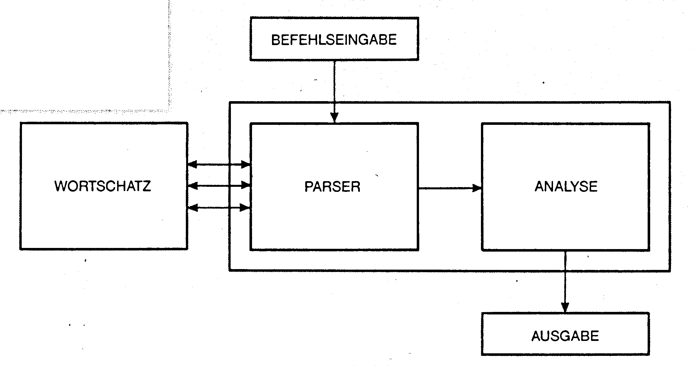
Die Grundlagen der Parsertechnik sind keineswegs spezifisch für den C 64 oder einen 64-KByte-RAM-Computer ausgelegt. Sie gelten für jedes Computersystem – egal, wie groß und wie schnell.
Wie Sie aus Bild 1 entnehmen können, setzt sich der Grundaufbau eines Programmes, das Sprache verstehen soll, aus 4 oder 5 Teilen zusammen. Diese Teile wollen wir nun im einzelnen besprechen:
Befehlseingabe
Wie der Name schon sagt, geht es hier um die Eingabe eines Befehls. Dieser Befehl muß jedoch nicht unbedingt das Format »TUE DIES UND JENES« haben. Er kann genausogut eine Frage, eine Antwort oder eine Bemerkung sein. Unter einem Befehl versteht man also alles, was einem Computer mitgeteilt wird. Die Befehlseingabe besteht in der Regel beim C 64 aus einer modifizierten INPUT-Routine. Bei anderen Computern, die bei ihrer INPUT-Routine von vorneherein Kommas und Anführungszeichen erlauben, muß erst gar nicht lange modifiziert werden. Eine modifizierte INPUT-Routine für den C 64 stellt Listing 22 (im Artikel Dateiverwaltung) dar. In diesem Bereich des Parser-Programms läßt sich kaum noch etwas verbessern. Eine Befehlseingabe muß jedoch nicht unbedingt über Tastatur erfolgen. Manche Adventures können, zumindest teilweise, mit Joystick oder Maus gesteuert werden. Theoretisch wäre auch eine Spracheingabe denkbar. Beide Systeme sind aber derart speicherintensiv, daß wir uns nicht näher damit beschäftigen werden.
Parser
Von der Befehlseingaberoutine aus gelangt der Befehlssatz (den ich auch in meinem zweiten Programmierkurs stets im String BE$ ablegen will) in den Parser. Der Parser selbst besteht im Prinzip aus zwei Hälften: Befehlszerlegung und Befehlscodierung (siehe Bild 2):
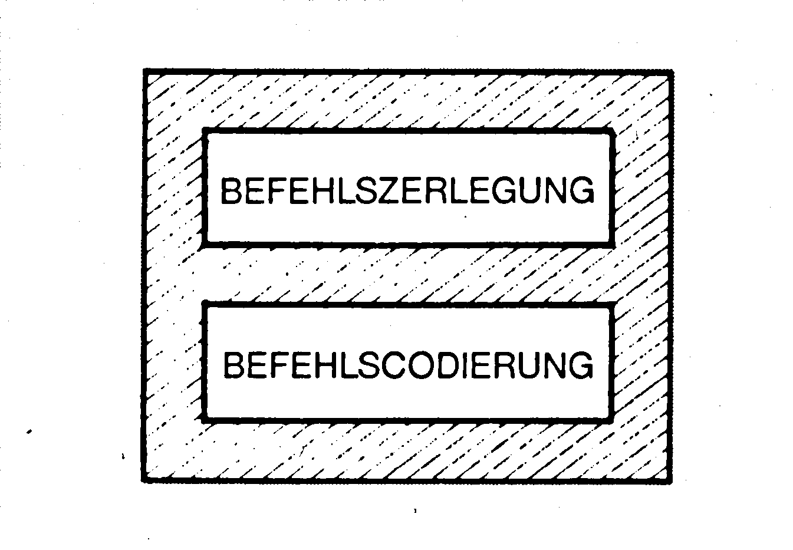
Wer meinen ersten Adventure-Kurs gelesen hat, weiß bereits, was hiermit gemeint ist. In der ersten Hälfte wird der Befehlssatz zunächst in einzelne Worte zerlegt. Nun greift der Parser in der Codierungshälfte auf den Wortschatz zurück und codiert jedes einzelne Wort. Er stellt fest, daß es in seinem Wortschatz nicht enthalten ist. Diese Zerlegung/Codierung läßt sich auf verschiedene Art und Weise durchführen. Hierzu später mehr, denn zunächst müssen wir erst einmal wissen, wie ein Wortschatz aufgebaut ist.
Wortschatz
Unter einem Wortschatz versteht man alle Wörter, die ein Adventure beziehungsweise KI-Programm kennt. Bei Eliza jedoch ist der Wortschatz gleich Null – wenn man einmal von den Schlüsselbegriffen und Wörtern absieht. Ich muß an dieser Stelle jedoch auch zugeben, daß sich der Parser meiner Gordon Saga eines kleinen Tricks bedient – er gaukelt dem Spieler mehr Intelligenz vor, als er eigentlich besitzt. Gibt man bei einem Infocom-Spiel beispielsweise den Befehlssatz »Küsse das goldene Schwert« ein, so erhält man mit Sicherheit eine Antwort wie zum Beispiel »Das kann doch nicht Ihr Ernst sein!«. Der Infocom-Parser weiß also, daß es keinen Sinn ergibt, wenn man ein Schwert küßt (Es sei denn, das Schwert ist in Wirklichkeit gar kein Schwert, sondern eine hübsche, verzauberte Prinzessin – lechz – aber lassen wir das lieber!). Woher ein Parser so etwas weiß, werde ich Ihnen später ausführlich erklären!
Betrachten wir noch einmal den Gordon-Saga-Parser: Wenn im Spiel eine Tür vorkommt, so gibt es verschiedene Befehlssatz-Möglichkeiten, um diese Tür zu schließen:
- SCHLIESSE DIE TÜR.
- MACHE DIE TÜR ZU.
- ICH WILL DIE TÜR ZU MACHEN.
Bis heute gibt es keinen anderen deutschen Parser, bei dem eine solche Eingabevielfalt erlaubt ist. Wie schafft der Gordon-Saga-Parser dies, wenn er doch nur über einen Miniwortschatz von 85 Worten verfügt?
Betrachten wir doch einmal einen kleinen Ausschnitt aus dem Wortschatz.
Dort steht gespeichert, daß TÜR ein Objekt ist, dem der Objektwert 1 zugeordnet ist.
Es ist auch festgelegt, daß SCHLIESSE und ZU Verben sind. Da beide die gleiche Bedeutung haben, wird beiden zum Beispiel der Verbwert 8 zugeordnet.
Wenn jetzt einer der 3 obigen Sätze nach den Verben ZU oder SCHLIESSE durchsucht wird, wird immer der Verbenwert (beziehungsweise Verbzahl VE) 8 gefunden.
Bei der Objektsuche wird jedesmal der für TÜR entsprechende Wert 1 gefunden.
Der Parser hat somit zwei Werte gefunden:
Objektzahl = 1
und
Verbzahl = 8
Diese beiden Werte werden dem Analyse-Teil des Parsers übermittelt. Der weiß, daß eine Tür geschlossen werden soll, wenn VE=8 und OB=1. Er überprüft jetzt nur noch zwei Dinge:
— ob überhaupt eine Tür vorhanden ist
und
— ob die Tür nicht bereits zu ist (man kann keine verschlossene Tür schließen).
Schließlich antwortet der Parser mit »Ok. Die Tür ist jetzt ZU.«.
Gibt man bei Gordon Saga jedoch zum Beispiel einen Befehl ein, der unsinnig ist und »Schließe das Schwert« lautet, so schweigt der Parser beziehungsweise antwortet mit »Ich verstehe nicht, was Sie wollen«. Er erkennt also nicht – so wie der Infocom-Parser – daß es unsinnig ist, ein Schwert zu schließen. Entschuldigen Sie bitte, wenn ich hier etwas vom eigentlichen Thema Wortschatz abgewichen bin und schon etwas vorausgegriffen habe, aber Sie sehen ja selbst, wie eng die einzelnen Bereiche des Parsers miteinander verschlungen sind! Unser momentanes Problem ist es, wie man einen Wortschatz anlegt und wie man ihn im Computer unterbringt und verwaltet.
Es gibt verschiedene Möglichkeiten, einen Wortschatz zu programmieren. Die Zahl dieser Möglichkeiten hält sich jedoch in überschaubaren Grenzen.
Ganz anders ist dies bei der Analyse. Hier gibt es unheimlich viele Programmiermöglichkeiten. Der Analyse-Teil des Parsers ist nicht zuletzt auch der Teil, in dem die KI steckt. Die KI entscheidet auch, ob der Parser weiß, wovon er redet, oder ob er nur so tut, als verstünde er, was los ist. Sie sehen also schon, daß der »Parser« des ELIZA-Effektes keinesfalls mit einem Parser verglichen werden kann, den ein gutes Adventure haben soll. Wenngleich dies jedoch eine Kombination beider Möglichkeiten nicht ausschließen darf. Im Rahmen dieses Kurses werden alle Parserbereiche ausführlich behandelt. Es werden alle Möglichkeiten beschrieben, die sich mit einem C 64 und Floppy realisieren lassen. Was den Analyse-Teil anbelangt, so kann ich Ihnen jedoch nur einige Lösungsideen vorstellen (Kursteil Adventureprogrammierung). Jeder muß für sich selbst entscheiden, welches Analysekonzept für ihn das beste ist.
Ausgabe
Im Ausgabe-Teil des Parsers wird schließlich das Resultat der Analyse ausgegeben. Dies geschieht in der Regel in Form einer PRINT-Ausgabe auf dem Bildschirm.
Parser 4.0 ist ein völlig Disketten-orientiertes System. Das heißt, der gesamte Wortschatz befindet sich in Form einer relativen Datei auf Diskette. Eine Diskettenseite faßt 170 KByte. Bei dem Wortschatz können wir davon ausgehen, daß die Wörter (Verben, Objekte etc.) eine Wortlänge von 20 Zeichen nicht überschreiten. Man kann theoretisch also Wortschätze mit über 6000 Wörtern verwalten. Praktisch ist dies jedoch Unsinn, da auf der Diskettenseite ja auch noch der Text für das Adventure untergebracht werden muß. Realistisch ist es allerdings, mit Parser 4.0 Wortschätze mit etwa 500 Wörtern zu verwalten – denn dann ist noch genug Platz für Texte. Lassen Sie uns also jetzt gemeinsam den Disk-orientierten Wortparser 4.0 entwickeln. Bevor man allerdings einen solchen Parser programmieren kann, braucht man erst einmal einen Wortschatz. Wie ist so ein Wortschatz aufgebaut? Die Liste in Tabelle 1 stellt einen solchen Relativen-Datei-Wortschatz dar. Sie wurde mit Hilfe des Relativen-Dateien-Editors zusammengestellt und anschließend ausgedruckt.
| 1 | abwaerts | 2010 |
| 2 | aufwaerts | 2009 |
| 3 | bedanken | 1074 |
| 4 | bedecken | 1037 |
| 5 | befestigen | 1042 |
| 6 | bekleiden | 1065 |
| 7 | belohnen | 1046 |
| 8 | benutzen | 1063 |
| 9 | berauben | 1058 |
| 10 | beruehren | 1017 |
| 11 | bestechen | 1068 |
| 12 | betatschen | 1017 |
| 13 | betrachten | 1011 |
| 14 | betreten | 1018 |
| 15 | betritt | 1018 |
| 16 | bewaessere | 1050 |
| 17 | bewegen | 1025 |
| 18 | bezahlen | 1046 |
| 19 | bieten | 1043 |
| 20 | binden | 1042 |
| 21 | bitten | 1066 |
| 22 | blasen | 1067 |
| 23 | blockieren | 1075 |
| 24 | brennen | 1045 |
| 25 | bruellen | 1070 |
| 26 | buchstabieren | 1016 |
| 27 | buddle | 1015 |
| 28 | danken | 1074 |
| 29 | dechiffrieren | 1038 |
| 30 | druecken | 1051 |
| 31 | entfachen | 1045 |
| 32 | entkommen | 1019 |
| 33 | entkorken | 1034 |
| 34 | entleeren | 1039 |
| 35 | entraetsle | 1038 |
| 36 | entriegle | 1034 |
| 37 | entziffre | 1038 |
| 38 | entzuenden | 1045 |
| 39 | erbitten | 1066 |
| 40 | ergreifen | 1012 |
| 41 | ermorden | 1057 |
| 42 | erschiessen | 1057 |
| 43 | erstechen | 1057 |
| 44 | erwerben | 1032 |
| 45 | erwirb | 1032 |
| 46 | erwuergen | 1057 |
| 47 | finden | 1041 |
| 48 | fliehen | 1019 |
| 49 | fragen | 1066 |
| 50 | fuellen | 1040 |
| 51 | geben | 1043 |
| 52 | gebrauchen | 1063 |
| 53 | gehen | 1001 |
| 54 | gellen | 1070 |
| 55 | gib | 1043 |
| 56 | giessen | 1050 |
| 57 | graben | 1015 |
| 58 | grabschen | 1017 |
| 59 | greifen | 1012 |
| 60 | haendigen | 1043 |
| 61 | heben | 1044 |
| 62 | hinab | 2010 |
| 63 | hinauf | 2009 |
| 64 | hinunter | 2010 |
| 65 | hoch | 2009 |
| 66 | holen | 1012 |
| 67 | huepfen | 1024 |
| 68 | informieren | 1069 |
| 69 | inventur | 1013 |
| 70 | kaufen | 1032 |
| 71 | kitzle | 1075 |
| 72 | klauen | 1058 |
| 73 | koepfen | 1057 |
| 74 | kontrollieren | 1063 |
| 75 | kuessen | 1071 |
| 76 | laufen | 1001 |
| 77 | leeren | 1039 |
| 78 | legen | 1014 |
| 79 | lesen | 1016 |
| 80 | lies | 1016 |
| 81 | liste | 1013 |
| 82 | n | 2001 |
| 83 | nehmen | 1012 |
| 84 | nimm | 1012 |
| 85 | no | 2006 |
| 86 | norden | 2001 |
| 87 | nordosten | 2006 |
| 88 | nordwesten | 2005 |
| 89 | nw | 2005 |
| 90 | o | 2004 |
| 91 | oeffnen | 1034 |
| 92 | osten | 2005 |
| 93 | paddle | 1026 |
| 94 | pennen | 1028 |
| 95 | pfeifen | 1067 |
| 96 | polieren | 1048 |
| 97 | probieren | 1059 |
| 98 | pruefen | 1033 |
| 99 | putzen | 1048 |
| 100 | quetschen | 1051 |
| 101 | ra | 2009 |
| 102 | rasten | 1027 |
| 103 | rauchen | 1079 |
| 104 | rauf | 2009 |
| 105 | reden | 1073 |
| 106 | reiben | 1017 |
| 107 | reinigen | 1048 |
| 108 | reisen | 1052 |
| 109 | reiten | 1029 |
| 110 | rennen | 1001 |
| 111 | ru | 2010 |
| 112 | rudere | 1026 |
| 113 | rufen | 1070 |
| 114 | ruhen | 1027 |
| 115 | runter | 2010 |
| 116 | s | 2002 |
| 117 | saeubere | 1048 |
| 118 | sagen | 1073 |
| 119 | saufen | 1078 |
| 120 | schauen | 1011 |
| 121 | schenken | 1043 |
| 122 | schicken | 1055 |
| 123 | schieben | 1051 |
| 124 | schlafen | 1028 |
| 125 | schliessen | 1035 |
| 126 | schmecken | 1059 |
| 127 | schreien | 1070 |
| 128 | schuettle | 1049 |
| 129 | schwimmen | 1021 |
| 130 | senden | 1055 |
| 131 | setzen | 1030 |
| 132 | so | 2008 |
| 133 | spielen | 1072 |
| 134 | sprechen | 1073 |
| 135 | sprich | 1073 |
| 136 | springen | 1024 |
| 137 | stecke | 1047 |
| 138 | stehen | 1031 |
| 139 | stehlen | 1058 |
| 140 | stoepsle | 1047 |
| 141 | strecken | 1053 |
| 142 | streichle | 1017 |
| 143 | suchen | 1041 |
| 144 | sueden | 2002 |
| 145 | suedosten | 2008 |
| 146 | suedwesten | 2007 |
| 147 | summen | 1067 |
| 148 | sw | 2007 |
| 149 | taetschle | 1017 |
| 150 | tauchen | 1022 |
| 151 | toeten | 1057 |
| 152 | tragen | 1065 |
| 153 | tragen | 1065 |
| 154 | trinken | 1078 |
| 155 | umhuellen | 1037 |
| 156 | unterrichten | 1069 |
| 157 | untersuchen | 1011 |
| 158 | verankere | 1042 |
| 159 | verbinden | 1042 |
| 160 | verbrennen | 1045 |
| 161 | verdecken | 1037 |
| 162 | verdrehen | 1061 |
| 163 | verhuellen | 1037 |
| 164 | verkaufe | 1054 |
| 165 | verknoten | 1042 |
| 166 | verkorken | 1036 |
| 167 | verlassen | 1020 |
| 168 | verlieren | 1014 |
| 169 | verlocken | 1068 |
| 170 | verloeschen | 1062 |
| 171 | vernichten | 1056 |
| 172 | verriegle | 1036 |
| 173 | verruecken | 1025 |
| 174 | verschieben | 1025 |
| 175 | verschliessen | 1036 |
| 176 | versperren | 1036 |
| 177 | versuchen | 1059 |
| 178 | w | 2003 |
| 179 | wandere | 1001 |
| 180 | warten | 1027 |
| 181 | wecken | 1076 |
| 182 | wedeln | 1064 |
| 183 | werfen | 1014 |
| 184 | westen | 2003 |
| 185 | winden | 1060 |
| 186 | winken | 1064 |
| 187 | wirf | 1014 |
| 188 | wuehlen | 1015 |
| 189 | zerquetschen | 1051 |
| 190 | zerreissen | 1052 |
| 191 | zerren | 1052 |
| 192 | zerschlagen | 1056 |
| 193 | zerschmettere | 1056 |
| 194 | zerstoeren | 1056 |
| 195 | zertruemmere | 1056 |
| 196 | ziehen | 1025 |
| 197 | zuenden | 1045 |
Dieser Wortschatz besteht bis jetzt nur aus Verben und Himmelsrichtungsangaben. Diese Verben können als eine komplette Verbensammlung betrachtet werden, die man in einem Adventure benötigt. Das heißt, mit diesen Verben läßt sich nahezu jeder Befehlssatz ausdrücken (in Verbindung mit entsprechendem Objekt natürlich).
Wie liest man diese Wortschatztabelle? Stellen wir diese Frage erst einmal zurück! Nehmen Sie zunächst bitte einmal eine leere Diskette her und formatieren Sie diese. Dann legen Sie mit Hilfe des Relativen-Datei-Editors auf dieser Disk eine relative Datei mit folgenden Angaben an: 600 Sätze mit je 25 Zeichen. In diese relative Datei schreiben Sie dann die Wortschatz-Tabelle. Das geht einfach: Die linke Zahl in der Tabelle gibt jeweils die Satznummer der relativen Datei an. Danach kommt der Satzinhalt: Verbname und Codierungszahl. Bild 3 zeigt ganz genau, wie der erste Satz in der relativen Datei aussehen muß. Die Wörter (=Verben, Objekte etc.) dürfen also maximal 21 Zeichen lang sein. Die letzten vier Zeichen der Sätze sind für die Codierungszahl reserviert, deren Bedeutung uns im Moment noch nicht interessieren soll.
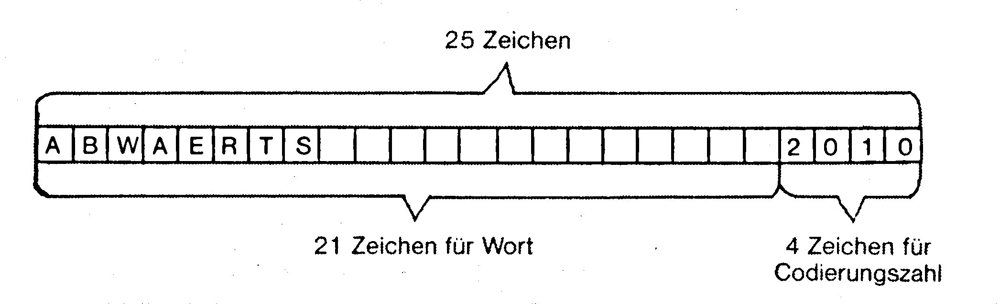
Beim »Abtippen« ist zu beachten, daß Sie nicht vom deutschen Zeichensatz Gebrauch machen. Das heißt, für »ae« darf nicht »ä« gesetzt werden und so weiter.
Wir haben jetzt also einen Wortschatz (bisher zwar nur Verben, aber das ist zunächst egal), auf den wir zurückgreifen können.
In der Einleitung zum Kapitel Parsertechnik habe ich Ihnen bereits den Grundaufbau eines JEDEN Parsers vorgestellt. Am Anfang jedes Parsers kommt folglich die Befehlseingabe, die beim C 64 in der Regel aus einer modifizierten INPUT-Routine besteht.
Nach Durchlauf der Befehlseingabe liegt der Befehl beziehungsweise Befehlssatz als String BE$ vor. Lassen Sie mich nun wieder einmal von meinem alten Lieblingsbefehlssatz ausgehen: NIMM DAS SCHWERT. Also BE$= »NIMM DAS SCHWERT«. Dieser Befehlssatz soll jetzt anhand Vergleich mit dem Wortschatz codiert werden. Das heißt, dem VERB im Satz wird eine Verbzahl VE zugeordnet, dem Objekt eine Objektzahl OB, unbedeutende Wörter (zum Beispiel der, die, das und so weiter) werden ignoriert. Es gibt nun verschiedene Möglichkeiten, einen String beziehungsweise Befehlssatz zu codieren, nach Wörtern zu durchsuchen. Diese Möglichkeiten, ihre Vor- und Nachteile möchte ich Ihnen nun im folgenden einmal ganz genau vorstellen:
Möglichkeit 1
Bitte tippen Sie Listing 1 ab und ergänzen Sie es um Listing 2.
Bei dieser Befehlszerlegungs-Methode wird der Befehlssatz eigentlich gar nicht zerlegt. Es wird einfach überprüft, ob das Verb »NIMM« (stellvertretend für die GANZE Worttabelle) im Befehlssatz BE$ enthalten ist. Dazu wird der gesamte Befehlsstring durchlaufen und mittels MID$-Funktion überprüft, ob das Verb NIMM (=VG$) im String vorkommt. Bild 4 demonstriert diesen Suchvorgang für den Befehlssatz »NIMM DAS SCHWERT«: das heißt, nehmen wir lieber als Befehlssatz »OTTO BITTE NIMM ES«, damit es nicht zu einfach wird. Aus Bild 4 wird auch deutlich, warum es legitim ist, anstelle von LEN(BE$) LEN(BE$)-LEN(VG$)+1 zu setzen. Es ist schließlich logisch, daß ein Suchbegriff von 4 Zeichen Länge spätestens in den letzten 4 Zeichen von BE$ gefunden werden muß.
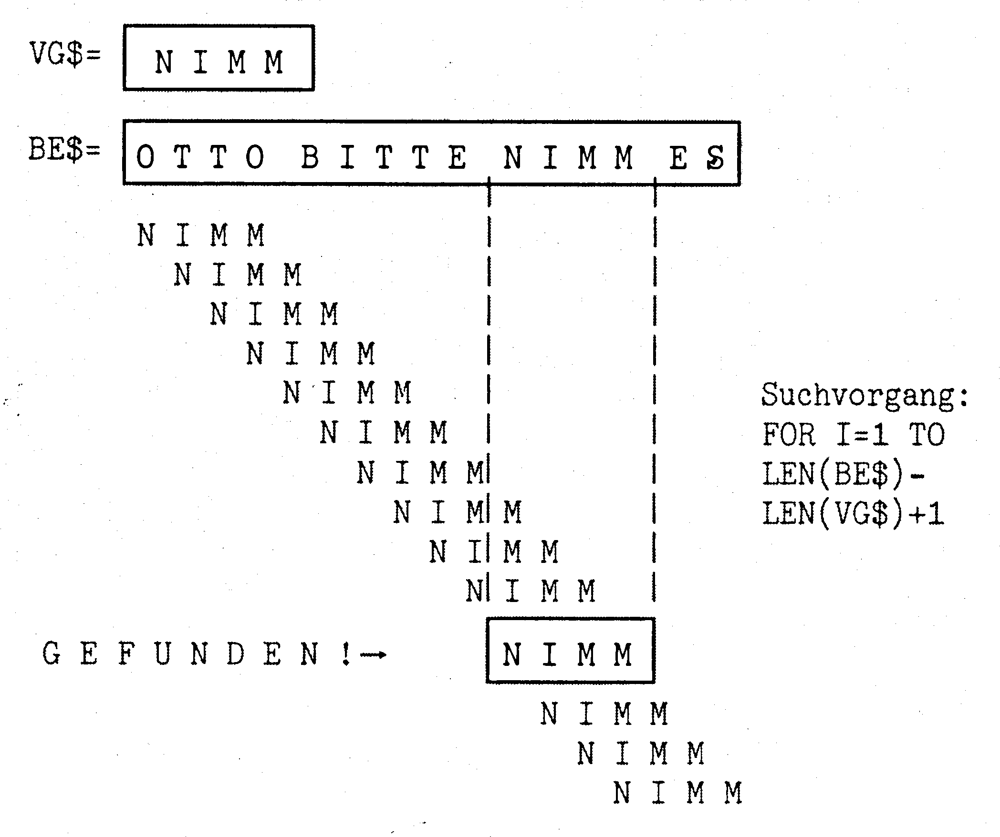
Achtung: Beim bisherigen Programm wird VG$ im gesamten BE$ gesucht. Es wird so zum Beispiel für BE$=»OTTO BITTE NIMM ES«, aber auch in »OTTOBITTENIMMES« gefunden. Will man nach absoluten Wörtern (zum Beispiel ELIZA-Schlüsselwörter) suchen, so muß sichergestellt sein, daß überprüft wird, ob sich am Ende und Anfang des gesuchten Wortes ein SPACE befindet.
Listing 2 muß für diesen Fall so modifiziert werden:
51015 BE$=BE$+" "+BE$+" "
51040 : IF " "+VG$+" "=MID$(BE$,I,LEN(VG$)+2) THEN VE=VGMethode 1 ist ganz die Methode, die bei ELIZA angewandt wird – nämlich dann, wenn die Schlüsselwörter gesucht werden. Das heißt, alle 38 Schlüsselwörter der ELIZA werden mittels dieser Methode in BE$ gesucht. Nicht zuletzt aus diesem Grund braucht ELIZA ziemlich viel Zeit, bis sie zu einer Antwort kommt. Gehen wir nun einmal von einem Wortschatz für ein Adventure aus, der ca. 600 Wörter groß ist. Ich sagte oben ja bereits, daß das Verb NIMM stellvertretend für den ganzen Wortschatz gesucht wird. Tatsächlich müßten alle 600 Wörter im Befehlssatz gesucht werden. Dies würde viel zuviel Zeit in Anspruch nehmen und außerdem zu Schwierigkeiten führen, wenn sich ein Befehlssatz aus mehreren Einzelbefehlen, die durch UND oder KOMMA getrennt sind, zusammensetzt. Methode 1 ist im Bereich der Adventure-Parser-Programmierung folglich völlig unbrauchbar. Aber auch was die Anwendung bei ELIZA anbelangt, gibt es inzwischen eine wesentlich bessere Methode zum Suchen eines Strings VG$ in einem String BE$:
Möglichkeit 2
Ergänzen Sie diesmal Listing 1 mit Listing 3. Geben Sie auch hier als Befehlssatz BE$ wieder »OTTO BITTE NIMM ES« ein. Auch bei dieser Routine handelt es sich um eine Routine, die den Befehlsstring BE$ durchläuft und VG$ (wieder »NIMM«, stellvertretend für den gesamten Wortschatz) darin sucht. Allerdings erfolgt das Suchen nicht wie bei Methode 1 in »ein Zeichen«-Schritten. Bild 5 verdeutlicht den Suchvorgang bei der hier verwendeten Routine.
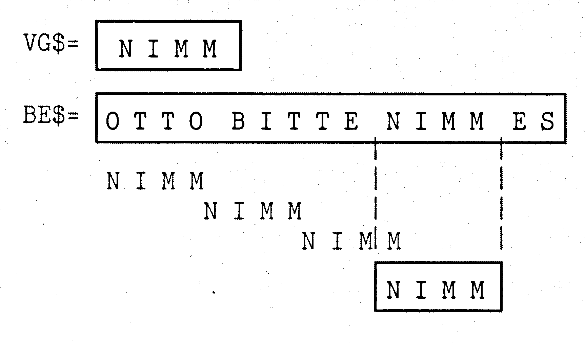
Während beim gleichen Befehlssatz BE$ bei Methode 1 ganze 12 Schritte bis zum Finden von VG$ in BES benötigt wurden, sind es hier nur noch 4. Der in Methode 2 angewandte Algorithmus wurde übrigens erst vor kurzem erfunden und in der 64'er Ausgabe 2/85 im Kurs »Effektives Programmieren« beschrieben.
Wie funktioniert das in Bild 5? Nun, der Suchvorgang beginnt ganz klar am Anfang des Befehlssatzes. Besteht hier noch keine Übereinstimmung, so wird VGS einfach um eine bestimmte Zeichenanzahl nach rechts verschoben. Woher weiß das Programm, um wie viele Zeichen es bei Nichtübereinstimmung verschieben muß? Das Prinzip ist eigentlich ganz einfach: Zunächst wird eine Tabelle angelegt, aus der hervorgeht, wie viele Zeichen jeder Buchstabe im Suchwort VG$ entfernt ist. Bei unserem Suchwort VG$=»NIMM« gilt folgendes:
M = 0 entfernen. Bei doppelt auftretenden Buchstaben wie zum Beispiel M im Wort NIMM, wird der Buchstabe notiert, der dem Ende des Wortes näher ist. Für alle Buchstaben, die im Suchwort VG$ nicht enthalten sind, wird als »Entfernungswert« die Länge von VG$ eingetragen – also 4 bei VG$=»NIMM«.
| VG$ | = NIMM | ||||
| A | = 4 | J | = 4 | S | = 4 |
| B | = 4 | K | = 4 | T | = 4 |
| C | = 4 | L | = 4 | U | = 4 |
| D | = 4 | M | = 0 | V | = 4 |
| E | = 4 | N | = 3 | W | = 4 |
| F | = 4 | O | = 4 | X | = 4 |
| G | = 4 | P | = 4 | Y | = 4 |
| H | = 4 | Q | = 4 | Z | = 4 |
| I | = 2 | R | = 4 | ||
Das Erstellen dieser Tabelle findet beim Programm in den Zeilen 51020-51052 statt. Aus dieser Tabelle kann nun immer ermittelt werden, um wie viele Zeichen VG$ nach einem mißglückten Versuch nach rechts verschoben werden darf. Und das geht so: Betrachten Sie bitte wieder Bild 5. VG$ wird von hinten nach vorn beziehungsweise von rechts nach links durchlaufen. Dabei wird jedes Zeichen mit der entsprechenden Stelle in BE$ verglichen. Stimmen alle Zeichen überein, so ist das Word VG$ in BE$ gefunden. Erfolgt jedoch bei einem Buchstabenvergleich keine Übereinstimmung, so darf BG$ nach rechts verschoben werden – und zwar genau um die Zeichenzahl beziehungsweise zu dem Wert, der gemäß der Tabelle dem Zeichen von BE$ zugeordnet ist, bei dem zum ersten Mal keine Übereinstimmung festgestellt wurde. Beim ersten Suchschritt wird NIMM mit OTTO verglichen. Es wird also schon beim letzten Buchstaben Unübereinstimmung festgestellt, daß M ungleich O ist. Gemäß der Tabelle hat O den Wert 4. VG$ darf somit um 4 Zeichen nach rechts verschoben werden. Allerdings spielt der Tabellenwert nicht die einzige Rolle beim Verschieben. Vom aus der Tabelle ermittelten Wert wird noch die Entfernung des Buchstabens vom Wortende abgezogen, bei der die erste Nichtübereinstimmung gefunden wurde. Dies ist nicht ganz einfach verständlich. Ich rate Ihnen daher eine eigenständige Analyse von Listing 3, Zeile 51060-51130. Danach wird Ihnen das Prinzip dieser Methode mit Sicherheit klar sein.
Man kann nicht so ohne weiteres behaupten, daß die zweite Methode der ersten überlegen ist. Auf den ersten Blick scheint Methode 2 zwar schneller zu sein, da weniger Verschiebungen notwendig sind. Dem steht jedoch eine wesentlich größere Rechenzeit als bei Methode 1 gegenüber. Am besten, Sie probieren selbst einmal aus, mittels TI$-Zeitmessung, welche der beiden Methoden die geeignetere ist. Auf jeden Fall ist die Methode 2 äußerst interessant, nicht zuletzt deshalb, weil sie erst vor kurzem entdeckt wurde.
Möglichkeit 3
Wie Methode 1 eignet sich Methode 2 jedoch kaum zur Adventureprogrammierung, sondern vielmehr zur Entwicklung von ELIZA-ähnlichen Simulationen. Anders Methode 3:
Die 3. Methode entspricht weitgehend der Methode, die ich bereits in meinem ersten Adventure-Kurs verwendet habe. Es geht darum, den eingegebenen Befehlssatz BE$ zunächst in einzelne Worte BE$(0)-BE$(N) zu zerlegen, wobei N für die Anzahl der im Befehlssatz vorkommenden Worte steht. Der Befehlssatz kann in BE$(0)="NIMM" BE$(1)="DAS" und BE$(2)="SCHWERT" zerlegt werden.
BE$(3) ist hier natürlich " ", wodurch das Satzende gekennzeichnet ist.
Nun wurde eine Wortzählvariable WZ auf 0 gesetzt. Sodann wurde das Wort BE$(WZ) codiert – also im Wortschatz gesucht. Es wird so eine Verbzahl beziehungsweise Objektzahl etc. ermittelt. Wird das Wort nicht im Wortschatz gefunden, so kommt die Fehlermeldung »ICH KENNE DAS WORT...NICHT«, und der gesamte Codiervorgang wurde abgebrochen. Sodann wurde der Wortzähler WZ um 1 erhöht, und eine neue Suchrunde begann. Der ganze Satz wurde so also codiert. Der Suchvorgang wurde dann abgeschlossen, wenn BE$(WZ)=» « war (also Satzende) oder BE$(WZ)=»UND« beziehungsweise »,« war (=Befehlssatz mit mehreren Befehlen). Wurde der Suchvorgang wegen letzterem unterbrochen, so wurde die Variable UD auf den Wert 1 gesetzt. Dadurch wußte das Programm, daß beim nächsten Mal, wenn der Spieler dran ist, die Befehlseingabe (INPUT-ROUTINE) übersprungen werden muß und die Codierung im alten Befehlssatz dort fortgesetzt werden mußte, wo man zuletzt wegen einem UND beziehungsweise KOMMA abgebrochen hatte.
In Bild 6a und 6b finden Sie nochmals die beiden Ablaufschemen, die diese Codiermethode beschreiben:
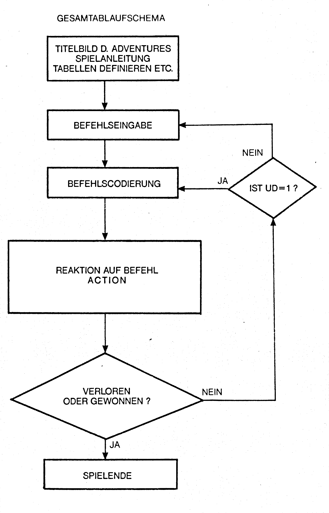
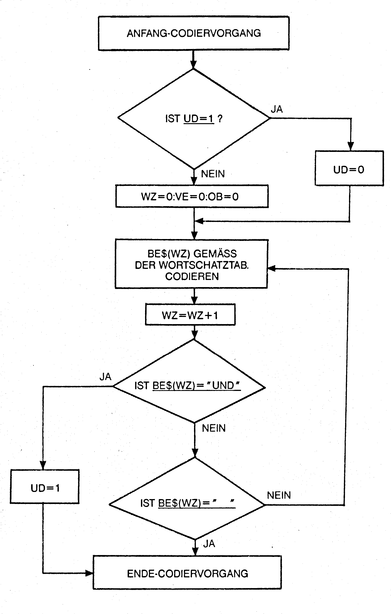
Wer meinen ersten Adventurekurs durchgearbeitet hat, dem sind diese beiden Ablaufschemen mit Sicherheit gut bekannt.
Obwohl die Ablaufschemen bereits über 1 Jahr alt sind und es inzwischen gravierende Verbesserungen im Bereich der Adventureprogrammierung gegeben hat (wie Sie schon bald sehen werden !), haben sie keineswegs ihre Gültigkeit verloren.
Bild 6a stellt das Gesamtablaufschema eine Adventures dar. Sie können jedes Adventure-Programmierkonzept in dieses Schema quetschen. Unter Adventure läßt sich natürlich auch jedes andere KI-Programm verstehen, bei dem im Programm folgende Teile enthalten sind: Befehlseingaberoutine, Analyse des Befehlssatzes anhand eines gegebenen Wortschatzes, Interpretation der Analyse beziehungsweise Reaktion auf die Befehlseingabe.
Bild 6b beschreibt den Ablauf der Befehlscodierung nach Methode 3. Lassen Sie uns jetzt Methode 3 programmieren.
Ergänzen Sie dieses Mal Listing 1 bitte um Listing 4. Unser Parsersystem 4.0 ist nun insofern komplett, daß nach der Befehlseingabe der Befehlssatz BE$ in einzelne Worte BE$(1)-BE$(N) zerlegt wird. Dabei ist festgelegt, daß der Befehlssatz aus maximal 10 einzelnen Wörtern bestehen darf. Dies läßt sich natürlich leicht abändern, aber 10 sollen uns zunächst genug sein zum Experimentieren. Die Wortzerlegung funktioniert äußerst primitiv: Es wird einfach BE$ durchlaufen und nach den SPACEs zwischen den einzelnen Wörtern gesucht. Eine Dokumentation zu Listing 4 erübrigt sich (hoffe ich doch !!!).
Jetzt muß der Codiervorgang gemäß Bild 6b programmiert werden. Ergänzen Sie das jetzige Programm bitte um Listing 5.
Auch Listing 5 läßt sich leicht verstehen. Auf Einbau von UND-Befehlstrennungen habe ich der Einfachheit halber zunächst verzichtet. Listing 5 bringt im Moment allerdings noch gar nichts. Wir müssen uns zunächst noch überlegen, wie wir das Wort in unserer relativen Wortschatzdatei finden beziehungsweise die einzelnen Befehlswörter BE$(1)-BE$(N). Im letzten Adventurekurs war dies noch ganz einfach: Da gab es für Verben und Objekte einzelne Tabellen (dimensionierte Stringfelder), in denen gesucht wurde. Jetzt befindet sich der gesamte Wortschatz, also Verben, Objekte, unwichtige Wörter, Richtungen etc; in einer relativen Datei, die alphabetisch sortiert ist. Nun, wie findet man Wörter in einer sortierten relativen Datei am schnellsten ? Ganz klar – binäre Suchmethode. Wir müssen also in Listing 5 eine binäre Suchroutine einbauen. Eine solche Routine haben wir ja bereits im Kursabschnitt »Dateiverwaltung« kennengelernt. Bevor wir die binäre Suchroutine in Listing 5 einbauen, müssen wir uns allerdings noch einige Gedanken zur Organisation des Wortschatzes machen.
Kleine Wortschatzlehre
Werfen Sie an dieser Stelle bitte nochmals einen Blick auf Bild 3. Dort habe ich Ihnen gezeigt, wie sich die 25 Zeichen eines jeden Satzes der Wortschatz-Datei aufteilen: Die ersten 21 Zeichen sind für das Wort selbst reserviert. Also zum Beispiel für NIMM, ÖFFNE (Verben) oder auch HAUSTÜR, SCHRANK (Objekte). Die letzten 4 Zeichen jedes Satzes sind für eine Zahl – die Codierungszahl – reserviert. Was hat es nun mit dieser Codierungszahl auf sich ? Ganz einfach, aus ihr läßt sich ermitteln, welcher Wortart das entsprechende Wort angehört und welche Zahl ihm als Codierung (zum Beispiel Verbzahl VE usw.) zugedacht ist. Die 4stellige Zahl ist also vielmehr als zwei Zahlen beziehungsweise eine Ziffer und eine Zahl zu verstehen, die unmittelbar nebeneinander stehen. Bild 7 macht die genaue Unterteilung deutlich:
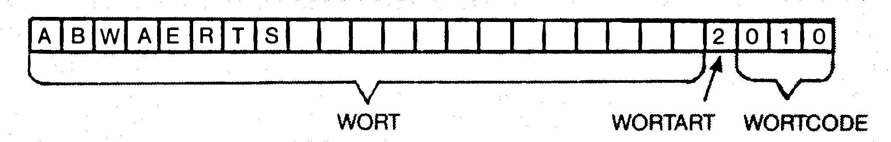
Die erste Ziffer der 4stelligen Zahl beschreibt somit die Wortart WA, während die letzten drei Ziffern den Wortcode WC bestimmen. Wir können also festlegen:
Wortart: WA= VAL(MID$(A$,22,1))
Wortcode: WC= VAL(MID$(A$,23,3))
A$ steht dabei für einen beliebigen Satz der Wortschatz-Datei. Das tatsächliche Wort ermittelt sich als
A$=LEFT$(A$,21)Allerdings hat das absolute Wort nicht immer die Länge von 21 Zeichen. Es wäre jedoch günstig, wenn in A$ nur das Wort (keine SPACEs mehr danach) stehen würde. Die SPACEs kann man ganz einfach eliminieren:
9340 IFRIGHT$(A$,1)="cursor right" THENA$=LEFT$(A$,LEN(A$-1)) :GOTO 9340Diese Zeile wiederholt sich so lange, bis in A$ nur noch das Wort und keine SPACEs mehr danach stehen. Eigentlich darf ich hier gar nicht von SPACEs reden. Was wir auf dem Bildschirm als SPACE sehen, ist bei Sätzen, die von relativen Dateien, die mit unserem Relative-Dateien-Editor erstellt wurden, stammen, tatsächlich ein »cursor right«-Zeichen. Achten Sie also stets darauf, daß Sie in Sätzen aus unseren Dateien niemals nach einem SPACE, sondern vielmehr nach dem cursor-right-Zeichen suchen (vergleiche Beschreibung zum Relative-Dateien-Editor im Kapitel »relative Dateien«)!
Natürlich muß jetzt noch festgelegt werden, welche Wortartzahl welcher Wortart entspricht:
| 1 | = Verb |
| 2 | = Richtung |
| 3 | = Objekt |
| 4 | = Aus-Wort |
Bisher treten in unserem Wortschatz nur 1 und 2 als WA-Werte auf – kein Wunder, denn unser Ausgangs-Wortschatz besteht ja bisher nur aus Verben und Richtungen (die im Prinzip auch als Verben verstanden werden können, jedoch trotzdem einen eigenen WA-Wert benötigen, wie Sie gleich sehen werden).
Unter Aus-Wort verstehe ich jedes Wort, das im Befehlssatz auftreten kann, bei der Codierung jedoch keinerlei Rolle spielt. Gemeint sind Wörter wie zum Beispiel der, die, das, nach, vom und so weiter.
Bei dem Wortschatz, den wir im letzten Adventurekurs verwendet haben, mußten die Wörter nicht mit Zahlen gekennzeichnet werden. Auch Wörter mit gleicher Bedeutung wurden anders abgehandelt. Die nun angewandte Methode hat natürlich ihre Vorteile: Zum einen läßt sich der Wortschatz leichter um Worte erweitern, und zum anderen müssen nicht mehr mehrere Einzeltabellen verwaltet werden (für die verschiedenen Wortarten).
Eine gute Wortschatzverwaltung beeinflußt nicht zuletzt auch die Anwenderfreundlichkeit eines Parsers in positivem Maße. Ein anwendungsfreundlicher Parser ist ein Parser, der bei der Befehlssatz-Analyse äußerst tolerant vorgeht.
Es muß zum Beispiel anstelle des Verbs NIMM auch NEHME und NEHM sowie gegebenenfalls auch HOLE und ERGREIFE verstehen. Der Trick bei dieser Sache ist, daß mehr Worte verstanden werden, als eigentlich im Wortschatz stehen. Was das soll? Ganz einfach:
Nehmen wir einmal an, wir wollen in einem Adventure die NIMM-Routine programmieren:
IF VERB=NIMM AND OBJEKT X IST HIER THEN PRINT "OK. ICH HABE OBJEKT X."So könnte eine vereinfachte Syntax lauten. Dem Verb NIMM ist gemäß der Wortschatztabelle der Wortwert 12 zugeordnet (also VE=12). Wir können also sagen:
IF VE=12 AND OBJEKT X IST HIER THEN PRINT "OK. ICH HABE OBJEKT X".Was passiert, wenn der Spieler den Befehlssatz »HOLE OBJEKT X« eingibt? Nun, das Programm antwortet mit »OK. ICH....«, da dem Verb HOLE ebenfalls der Wortwert (beziehungsweise Verbwert) 12 zugeordnet ist. Unser Wortschatz ist ziemlich intelligent aufgebaut – intelligent insofern, daß Verben gleicher Bedeutung der gleiche Verbwert zugeordnet ist. Ein guter Parser sollte allerdings »NIMM DAS SCHWERT« genauso gut verstehen wie »ICH WILL DAS SCHWERT NEHMEN« und »NEHM DAS SCHWERT« (auch wenn es grammatikalisch nicht in Ordnung ist). Wie stellt man es nun an, daß NEHM genauso gut verstanden wird wie NEHMEN? Nun, ganz einfach. NEHM steckt schließlich in NEHMEN drin. Nicht zuletzt ist dies auch der Grund, warum im Wortschatz immer die längstmögliche Form eines Verbs gespeichert wird – insofern ist dies möglich. Die meisten routinierten Adventure-Spieler geben eh in der Sytax NIMM, VERLIER, GIB etc. ein. Wir können uns deshalb auch hauptsächlich an dieser Form orientieren. Nehmen wir einmal an, der Satz »NIMM DAS SCHWERT« soll codiert werden (welcher sonst). BE$(0) ist dann ganz klar »NIMM«. Wir wollen BE$(0) jetzt anhand des Wortschatzes codieren. Mittels der binären Suchmethode werden dann verschiedene Sätze vom Wortschatz eingelesen (als String A$) und mit SU$(=BE$(0)) verglichen. Bild 8 zeigt, wie das Wort NIMM im Wortschatz nach der binären Suchmethode gefunden wird.
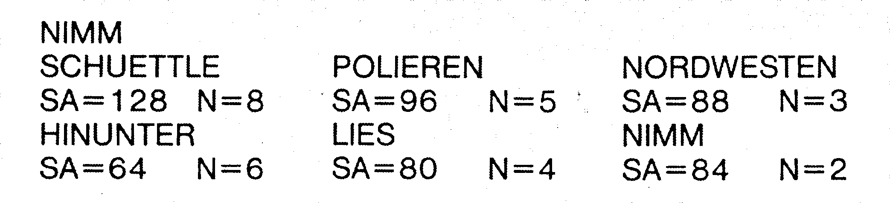
Wie wird A$ eingentlich mit SU$ verglichen?
Ein Vergleich IF A$=SU$ THEN PRINT »GEFUNDEN« wäre mit Sicherheit falsch, da man in diesem Fall niemals das Verb NEHM finden würde (im Wortschatz steht nur NEHME). Der korrekte Vergleich lautet daher:
IF SU$=LEFT$(A$,LEN(SU$)) THEN ? "GEFUNDEN"Dadurch sind bei der Befehlseingabe auch Abkürzungen der Verben erlaubt – zum Beispiel UNTERSU statt UNTERSUCHEN beziehungsweise NEHM statt NEHMEN. Dies ist mit Sicherheit jedem sonnenklar. Was aber, wenn der Spieler nach Norden gehen will? Er wird dann mit größter Wahrscheinlichkeit BE$=»N« eingeben. Aufgrund unserer bisherigen Abfragemethode IF SU$=LEFT$(A$,...) wird das Programm annehmen, daß das erste Wort, das mit N beginnt, das richtige ist. Werfen Sie doch bitte einmal einen Blick in die Wortschatztabelle: Sie werden merken, daß dort für Norden sowohl »N« als auch »NORDEN« vermerkt ist. Nicht umsonst haben Richtungen deshalb einen anderen WA-Wert als Verben. Sicher erinnern Sie sich daran, daß A$ vor dem Vergleich mit SU$ präpariert wird. Zunächst wird A$ mit einem Satz der Wortschatzdatei gefüllt. Dann werden Wortcode WC und Wortart WA ermittelt. Zuletzt steht in A$ dann nur noch das absolute Wort. Dadurch, daß die Wortart beim Vergleichen bereits bekannt ist, kann folgender Vergleich programmiert werden:
IF WA=1 AND SU$=LEFT$(A$,LEN(SU$)) THEN ? "VERB GEFUNDEN"
IF WA=2 AND SU$=A$ THEN ? "RICHTUNG GEFUNDEN"Sie sehen also, bei RICHTUNGEN muß SU$ mit A$ übereinstimmen und SU$ nicht nur linksbündig in A$ enthalten sein.
Wie muß nach Objekten gesucht werden? Wir wollen uns auch mit dieser Frage beschäftigen – auch wenn sich im Wortschatz bisher noch keine Objekte befinden.
Objektnamen setzen sich oft aus Hauptwörtern zusammen. So zum Beispiel HAUSTÜR, HOLZKISTE, WEINFLASCHE und so weiter. Will der Spieler eine Haustür öffnen, so kann er sagen »ÖFFNE DIE HAUSTÜR« oder auch »ÖFFNE DIE TÜR«. Der Parser muß also wissen, daß HAUSTÜR=TÜR, HOLZKISTE=KISTE und so weiter ist. Entscheidend zur Bestimmung eines Objektes ist stets das zweite Hauptwort (beziehungsweise das Hauptwort, das ganz rechts im Objektnamen steht, beziehungsweise das Objekt selbst, wenn es sich nicht aus mehreren Hauptwörtern zusammensetzt). Es bietet sich also an, bei der Objektsuche von »rechts her« zu vergleichen:
IF WA=3 AND SU$=RIGHT$(A$,LEN(SU$)) THEN ? "OBJEKT-GEFUNDEN"Das war wieder mal ziemlich viel Theorie. Listing 6 setzt das eben Gelernte in die Praxis um.
Dokumentation:
| 10-30 | Hier wird die Wortschatzdatei geöffnet. Vor Programmstart ist es also erforderlich, daß Sie die Diskette mit der Wortschatzdatei einlegen. Anschließend wird ein Suchbegriff SUS eingegeben. |
| 9000-9230 | Hier stehen die drei Unterprogramme, die beim Arbeiten mit relativen Dateien immer wieder benötigt werden: Positionieren, Lesen und Schreiben. |
| 9300-9350 | Hier wird ein Satz A$ der Wortschatzdatei gelesen. Zunächst werden Wortcode WC und Wortart WA gelesen, dann die Codierzahl vom A$ abgeschnitten und alle SPACES (cursor-rights) hinter dem absoluten Wort weggenommen (Zeile 9340). |
| 9500-9780 | Hier steht die binäre Suchroutine, wie ich sie Ihnen bereits im Kapitel Dateiverwaltung Listing 15 beschrieben habe. Die Routine wurde zwecks Zusammenarbeit mit relativer Datei entsprechend modifiziert. |
| 9540 | Für SZ muß die Anzahl der Worte, die im Wortschatz enthalten sind, eingesetzt werden. (Im Moment haben wir 197 Worte.) |
| 9620-9637 | Hier werden die Objekte, Verben und Richtungen gesucht. |
| 9623 | Wenn die Zeichenanzahl des Suchbegriffs weniger als 3 Zeichen beträgt, muß davon ausgegangen werden, daß es sich bei SU$ um eine Richtungsangabe handelt. Das heißt auch, daß Verbenabkürzungen mindestens 3 Buchstaben betragen müssen. Man kann für INVENTUR also nicht die Abkürzung I eingeben- es sei denn, I wurde zusätzlich im Wortschatz definiert (Zeile 9637 sorgt dafür, daß solche Verbabkürzungen akzeptiert werden). Ist LEN(SU$) also kleiner als 3, so werden die Zeilen 9625 (Verbvergleich linksbündig) und Zeile 9630 (Objektvergleich rechtsbündig) übersprungen. |
| 9625 | Verbsuche (linksbündig) |
| 9630 | Objektsuche (rechtsbündig) |
| 9635 | Richtungssuche (absolut) |
| 9637 | Verbsuche (absolut) – für Verben, deren Abkürzung auch weniger als 3 Zeichen betragen darf – müssen im Wortschatz extra verzeichnet werden! |
Zum Abschluß von Methode 3 müßte Listing 6 nun eigentlich mit Listing 5 kombiniert werden. Ich möchte jedoch davon absehen, da Sie dies zum einen leicht selbst machen können und es zum anderen noch eine bessere Möglichkeit gibt, die im Prinzip eine Verbesserung des letzten Programms bedeutet:
Möglichkeit 4
Unser Wortschatz besteht aus 197 Worten. Um ein bestimmtes Wort mittels der binären Suchmethode in diesem Wortschatz zu finden, beziehungsweise um festzustellen, daß dieses Wort im Wortschatz nicht vorkommt, sind maximal 8 Lesezugriffe auf Disk erforderlich. Jeder Schreib- beziehungsweise Lesezugriff auf Disk kostet Zeit. Auch durch Assemblerprogrammierung läßt sich diese Zugriffszeit kaum verkürzen. Es gibt allerdings eine Suchmethode, bei der weniger Lesezugriffe aus Disk nötig sind als bei Möglichkeit 3.
Das Index-Binäre-Suchprinzip
Keine Angst, dieses Prinzip läßt sich einfacher verstehen, als der komplexe Name vermuten läßt. Beim Index-Binären-Suchprinzip handelt es sich lediglich um eine Verbesserung der binären Suchmethode. Gehen wir einmal davon aus, daß unser Suchbegriff SU$=»NIMM« ist. Unser Parser erkennt nicht auf Anhieb, daß SU$ ein VERB ist. Er erkennt SU$ erst dann als Verb an, wenn er es im Wortschatz gefunden hat. Etwas könnte der Parser allerdings schon vor Beginn des Suchvorgangs wissen – und zwar, daß der Suchbegriff mit dem Buchstaben N beginnt. Wozu also den gesamten Wortschatz durchsuchen, der ja eh alphabetisch geordnet ist? Es würde doch vollkommen ausreichen, den Bereich, in dem alle mit N beginnenden Wörter stehen, mittels der binären Suchmethode zu durchsuchen! Dazu benötigt man zunächst einen Index – eine Tabelle, in der steht, ab welchem Satz die mit A beginnenden Wörter stehen, ab welchem die mit B beginnenden, und so weiter. Das Programm in Listing 7 ist in der Lage, den Index zu einem beliebigen Bereich einer relativen Datei (der natürlich alphabetisch geordnet sein muß) zu erstellen.
Das Programm ist anwenderfreundlich – es erkennt unlogische Eingaben und erklärt sich nach Programmstart selbst.
Es lohnt sich eigentlich gar nicht, den Index-File jedesmal erst lange von Disk zu laden. Es ist günstiger, die Werte einfach in DATA-Zeilen im Listing abzulegen.
Durch Anwendung der Index-Binären-Methode sind nur wenig Lesezugriffe auf Disk notwendig, bis ein Wort gefunden ist: Die größte Wortgruppe unserer Wortschatzdatei stellen die Wörter dar, die mit S beginnen: Das sind 33 Worte. Im ungünstigsten Fall werden nur 6 Zugriffe benötigt, um ein Wort zu finden. Vorteilhaft an der neuen Methode ist außerdem, daß Wörter, die mit einem Buchstaben beginnen, der im Wortschatz als Anfangsbuchstabe überhaupt nicht auftaucht (zum Beispiel C,J,M,X und Y), erst gar nicht gesucht werden, weil von vorneherein klar ist, daß sie im Wortschatz nicht auftreten.
Bei Methode 4 wird allerdings auch noch etwas anderes verbessert: Das Zerlegen von BE$ in BE$(0)-BE$(N). Eigentlich ist es nämlich Quatsch, BE$ in einzelne Worte zu zerlegen. Es reicht völlig aus, mit Zeigern zu arbeiten. Bild 9 verdeutlicht dies.
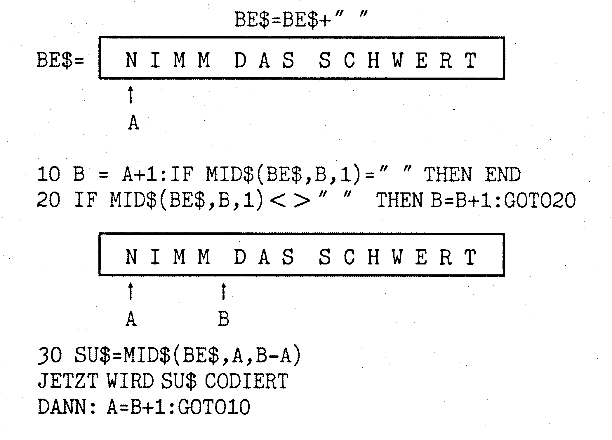
Das mit den Zeigern funktioniert ganz einfach: Zu Beginn wird Zeiger A auf das erste Zeichen von BE$ gesetzt. Zeiger B läuft von Zeiger A aus nach rechts bis zum nächsten Space. Das erste Suchwort ist somit festgelegt. Nachdem dieses Wort codiert ist, wird Zeiger A auf das Zeichen rechts neben Zeiger B gesetzt – auf das erste Zeichen des neuen Suchwortes. Jetzt läuft Zeiger B wieder nach rechts und sucht erneut das Wortende, und so weiter.
Trifft Zeiger B auf kein Zeichen mehr, so ist er am Ende des Satzes angelangt – der Satz ist komplett codiert.
Damit das letzte Wort der Sätze noch codiert wird, muß am Befehlssatz BE$ noch ein SPACE angehängt werden.
Bei Methode 4 soll auch noch etwas anderes berücksichtigt werden – das Satzende. Es gibt 3 Möglichkeiten, einen Satz zu beenden – mit einem Punkt, einem Ausrufezeichen, einem Fragezeichen oder einfach nichts.
Uns interessieren allerdings nur zwei Fälle: Fragezeichen oder nicht. Bevor BE$ also codiert wird, muß künftig darauf geachtet werden, ob am Ende des Satzes ein Satzzeichen steht. Die Variable SN speichert das Satzzeichen (Punkt etc. =0, Fragezeichen =1). Dann wird BE$ so gekürzt, daß das Zeichen wegfällt.
Nach dem Codiervorgang müssen folgende Werte in Form von Variablen vorliegen:
| SN | Satzzeichen am Satzende |
| VE | Verbzahl |
| O | Objektzahl für erstes Objekt |
| O2 | Objektzahl für zweites Objekt (falls vorhanden) |
| RI | Richtung |
| UD | UND-Speicher |
| AD | Adjektiv-Zahl |
Zur Objektcodierung werden zwei Variablen O1 und O2 benötigt, da ein Befehl aus maximal zwei Objekten (direktes und indirektes) bestehen kann. Beispiel: »ÖFFNE DIE TÜR MIT DEM SCHLÜSSEL«. Im Befehl kann auch nur ein Verb auftreten. Gegebenenfalls kann auch noch eine Variable AD für Adjektiv zur näheren Beschreibung der Objekte verwendet werden. Adjektive haben die Wortzahl WZ=5.
Jetzt kann Methode 4 wie in Listing 8 programmiert werden:
Die REM-Zeilen können beim Abtippen nicht so ohne weiteres weggelassen werden!
Mit REM-Zeilen beansprucht Parser 4.0 zirka 3 KByte RAM Basic-Speicher. Entfernt man die REM-Zeilen unter Berücksichtigung der dann teils veränderten Ansprungsadressen, so werden nur zirka 2 KByte Basic-RAM benötigt.
Parser 4.0 ist ziemlich intelligent und zum größten Teil sogar idiotensicher. Das heißt, es werden die blödsinnigsten Befehlseingaben akzeptiert. Zum Beispiel:
"NIMM DAS SCHWERT"
" NIMM DAS SCHWERT!"
"NIMM SCHWERT, UNTERSUCHE ES"
Die UND-Routine ist auch eingebaut. Außerdem speichert Parser 4.0 jeweils das zuletzt eingegebene Objekt in der Variablen OM. Bei Eingabe eines der Schlüsselwörter IHN, SIE oder ES (zum Beispiel BE$=»UNTERSUCHE ES«), so wird O gleich OM gesetzt. Der Clou ist auch, daß Sie einfach nur GOSUB 50000 eingeben müssen, wenn vom Spieler eine Befehlseingabe erwartet wird. Parser 4.0 erkennt automatisch, ob die INPUT-Routine angesprungen werden muß oder ob der letzte Befehlssatz noch nicht ganz abgehandelt ist (UND-FALL). Kann Parser 4.0 ein Wort nicht codieren, weil es im Wortschatz nicht vorkommt, so erfolgt »ICH KENNE DAS WORT .... NICHT«, und anschließend wird zur Befehlseingabe-Routine zurückgesprungen. Dies ist notwendig, damit ein Spieler niemals verlieren kann, wenn er bei einer entscheidenden Situation (zum Beispiel Kampf mit Monster) sich aus Versehen vertippt (zum Beispiel TOTE MONSTER statt TOETE MONSTER). Das Programm darf also erst dann weiterlaufen, wenn der Spieler eine korrekte Befehlseingabe gemacht hat.
Nach dem Rücksprung aus Parser 4.0 liegt der Satz codiert in den Variablen SN,VE,O1,O2,UD,AD vor. Natürlich können Sie Parser 4.0 jetzt noch nicht gründlich testen, da im Wortschatz momentan noch die Objekte fehlen. Zunächst rate ich Ihnen, die nun folgende Dokumentation gründlich zu studieren, damit Sie in der Lage sind, Parser 4.0 selbst zu modifizieren – denn dies ist beim Einbau in eigene Programme fast immer notwendig!
Dokumentation zu Parser 4.0
| 10 | Hier wird die Wortschatz-Datei geöffnet. Das heißt es muß die Diskette eingelegt sein, auf der sich der Wortschatz befindet. |
| 20-30 | Hier stehen die DATAs zum Wortschatz-Index, die mit dem Index-Maker ermittelt wurden. |
| 35 | Tatsächlich besteht die Index-Tabelle nicht nur aus 26, sondern 27 Elementen. Das 27. Element steht für den Buchstaben, der nach Z kommt. Richtig, nach Z kommt kein Buchstabe mehr. Das 27. Element der Index-Tabelle errechnet sich vielmehr aus ANZAHL WÖRTER DER WORTTABELLE +1. Dies ist nötig, damit das Programm erkennt, von welchem bis zu welchem Satz die mit Z beginnenden Wörter zu finden sind. Der 27. Wert wird NICHT automatisch vom Index-Maker erstellt. Er muß als »von Hand« berechnet und eingesetzt werden. |
| 40 | Einlesen der Index-Datas in das Index-Feld IN(0)-IN(26) |
| 50-70 | Hier wird Parser 4.0 mittels GOSUB 50000 aufgerufen. Danach werden die codierten Werte, SN, VE, 01, 02, UD, RI, AD ausgegeben. Dann erfolgt Rücksprung zum Parser-Aufruf. Die Zeilen 50-70 dienen also nur zum Testen des Parsers. |
| 50000-50120 | Hier erfolgt die Befehlseingabe in Form einer erweiterten INPUT-Routine, wie ich sie Ihnen im Kursabschnitt Datei-Verwaltung bereits vorgestellt habe. |
| 50012 | Hier wird überprüft, ob die letzte Befehlseingabe bereits voll codiert worden ist oder ob sie nach einem UND abgebrochen wurde. ZB BE$=»NIMM SCHWERT UND GEH NORDEN« wobei erst der Teilbefehl »NIMM SCHWERT« ausgeführt worden ist. Ist der Befehlssatz BE$ also noch nicht komplett codiert, so wird die Befehlseingabe (und natürlich auch die Suche nach dem Satzzeichen, die ja bereits erfolgt ist) übersprungen, alle bisherigen codierten Werte VE,01 etc. werden beibehalten, und es wird dort weiter codiert, wo zuletzt abgebrochen wurde – GOTO 50500. |
| 50400-50450 | Hier wird nach einem Satzzeichen am Ende von BE$ gesucht. |
| 50420 | Alle unnötigen Leerzeichen, die dem Befehlssatz BE$ anhängen, werden weggekürzt. Beispiel: AUS BE$=»NIMM SCHWERT ! « wird BE$=»NIMM SCHWERT!«. |
| 50440-50450 | Wird ein Satzzeichen gefunden, so wird es in der Variablen SN gespeichert (interessant ist dabei eher nur das Fragezeichen!). Dann wird das Satzzeichen weggekürzt. Also aus »NIMM SCHWERT !« wird jetzt »NIMM SCHWERT«. All dies ist notwendig, damit bei einer Befehlseingabe BE$=»NIMM SCHWERT!« nicht die Fehlermeldung » »Ich kenne das Wort SCHWERT!« nicht« nicht auftritt. Denken Sie also stets daran, alle unnötigen Leerzeichen vor oder nach dem Befehl zu eliminieren. Einen Parser zu programmieren, ist wirklich eine verflixte Sache: Es gibt soviele Dinge, die berücksichtigt werden müssen, damit der Parser auch wirklich absturzfrei läuft. Das Wegkürzen der Leerstellen ist ein gutes Beispiel hierfür. Ein Tip: Wenn Sie glauben, den Parser endlich fertig zu haben, dann compilieren Sie ihn mit Hilfe eines Compilers wie zum Beispiel Austro Comp oder Pet Speed. Der Compiler überprüft alle Zeichen und weist auf eventuelle Syntax-Errors hin. Wird ein Parser-Programm fehlerfrei compiliert, so können Sie davon ausgehen, daß im Programm keine schwerwiegenden Fehler vorkommen! |
| 50500-50600 | Hier werden die Zeiger ZA und ZB auf den Befehlssatz BE$ gesetzt oder weitergerückt. |
| 50502 | Wurde beim letzten Vorgang nicht wegen UND abgebrochen, so werden alle bisher codierten Werte auf 0 gesetzt. |
| 50504 | Wird hier festgestellt, daß der letzte Befehlssatz noch nicht komplett codiert worden ist (UD größer 0), so passiert folgendes: Die Richtungszahl RI wird auf 0 gesetzt (warum, erfahren Sie später noch!). Dann erfolgt ein Sprung zu Zeile 50530. Das heißt, alle Operationen oder Einstellungen, die vorgenommen werden, wenn ein neuer Befehlssatz codiert werden soll (also kein wegen UND abgebrochener), werden übersprungen. |
| 50505-50520 | Einstellung der Zeiger auf einen neuen Befehlssatz. |
| 50505 | Alle Leerstellen, die dem eigentlichen Befehl voranstehen, werden entfernt. Beispiel: Aus » NIMM SCHWERT« wird »NIMM SCHWERT«. |
| 50510 | BE$ wird ein Leerzeichen angehängt. Aus BE$ = »NIMM SCHWERT« wird also BE$ = »NIMM SCHWERT «. Dies ist nötig, da später beim Suchvorgang das Auffinden eines Leerzeichens als Markierung eines Wortendes interpretiert wird. |
| 50520 | Zeiger ZA wird auf das erste Zeichen von BE$ gesetzt. |
| 50530 | Zeiger ZB wird auf das Zeichen nach ZA gesetzt. |
| 50540 | Ist MID$(BE$,ZB,1) = "", so wurde das Satzende erreicht. Der Codiervorgang wird mittels RETURN abgebrochen. |
| 50550 | Ist MID$(BE$,ZB,1) kein Leerzeichen, so wird Zeiger ZB um ein Zeichen nach rechts gerückt und es erfolgt ein Rücksprung zu Zeile 50550. Zeiger ZB wird also so lange nach rechts geschoben, bis entweder das Satzende oder ein Leerzeichen gefunden wird. Wird ein Leerzeichen gefunden, so ist das neue Suchwort festgelegt: SU$=MID$(BE$,ZA,ZB-ZA). |
| 50590 | Das neue Suchwort, das von den Zeigern ZA und ZB auf BE$ bestimmt ist, wird im String SU$ abgelegt. |
| 50600-50670 | Es erfolgt eine »Vorbehandlung« des Suchwortes SU$. Hierbei werden solche Wörter gesucht, die Parser-intern gespeichert sind und nicht auf der Wortschatz-relativen Datei verzeichnet sind. |
| 50610 | Hier wird überprüft, ob SU$ gleich UND ist. Wenn ja, so ist klar, daß ein Teilbefehl von BE$ codiert ist und später von hier aus weitercodiert werden muß. Zunächst muß jedoch der bisherig ermittelte Teilbefehl analysiert werden. Dazu wird die Variable UD auf 1 gesetzt und der Codiervorgang mittels RETURN abgebrochen. |
| 50620 | Das gleiche wie bei 50610 in Grün – nur, daß hier nach einem Komma gesucht wird. Die Komma-Suche hat allerdings einen Haken: Das Komma wird nur dann gefunden, wenn links und rechts von ihm mindestens je ein Leerzeichen steht. Bei Befehlssätzen wie zum Beispiel BE$ = »NIMM SCHWERT,BIERFLASCHE« erfolgt eine Fehlermeldung à la »Ich kenne das Wort Bierflasche nicht«. Mit einem direkten Vergleich IF SU$ = "," ist es also nicht abgetan. Um den Parser nicht unnötig kompliziert zu machen, habe ich deshalb auf diese umfangreiche Abfrage verzichtet. Wie umfangreich diese Abfrage ist, werden Sie spätestens dann bemerken, wenn Sie versuchen, sie zu programmieren. Ich rate Ihnen, bei einem Basic-Parser auf diese Abfragerei zu verzichten, denn sie kostet viel zuviel kostbare Rechenzeit, und der Parser wird zu langsam! |
| 50630-50660 | Diese Zeilen treten dann in Kraft, wenn ein UND oder ein Komma gefunden worden ist. Zeiger ZA wird auf eine Stelle nach ZB gesetzt. |
| 50540-50550 | Hier erfolgt das bereits beschriebene Weiterrücken von Zeiger ZB nach rechts, bis ein Leerzeichen oder das Satzende gefunden wird. Wird hier ein Satzende festgestellt, so heißt dies, daß nach dem UND oder Komma nichts mehr kommt. Der Parser äußert sich im Fall zum Beispiel BE$ = »NIMM SCHWERT UND« empört mit »Und was?«, wobei er wieder einen Hauch von Intelligenz beweist und den Spieler in Erstaunen versetzt ... |
| 50670 | Wird eines der Schlüsselwörter IHN, SIE oder ES gefunden, so weiß der Parser sofort, daß der Spieler sich auf das zuletzt erwähnte Objekt bezieht. Das zuletzt erwähnte Objekt wird immer in der Variablen OM gespeichert. Der Parser braucht hier also nichts weiter zu tun, als der Objektzahl 01 den Wert OM zuzuweisen und dann die binäre Suchroutine zu überspringen mit GOTO 51300. |
| 51000-51330 | Hier steht die binäre Suchmethode, mit deren Hilfe SU$ in der relativen Wortschatzdatei gesucht wird. |
| 51008 | Der ASC-Wert des 1. Buchstabens vom Suchwort SU$ wird in der Variablen I gespeichert. |
| 51009 | Wenn nicht der ASC-Wert eines der Buchstaben von A-Z ist, also I-65 kleiner 0 oder I-65 größer 25, dann ist klar, daß das Suchwort nicht mit einem Buchstaben, sondern mit irgendeinem Zeichen beginnt, zum Beispiel SU$= "/%&%/". Es erfolgt dann eine »ICH KENNE DIESES WORT NICHT«-Meldung, und der Codiervorgang wird abgebrochen. |
| 51010 | Der Anfang des zu durchsuchenden Bereiches wird mittels der Index-Tabelle IN(0)-IN(26) ermittelt und in AN gespeichert. |
| 51012-51015 | Hier wird das Ende des Suchbereiches, EN ermittelt. Das Ende berechnet sich NICHT einfach durch EN=IN(I-64), da berücksichtigt werden muß, daß in der Index-Tabelle für nicht existierende Anfangsbuchstaben (zum Beispiel C) eine Null eingetragen ist. Es darf also nicht der unmittelbare nächste Buchstabe zur Ermittlung des Suchendes herangezogen werden, sondern vielmehr der nächste existente Buchstabe (Tabellenwert ungleich 0). |
| 51016 | Wenn AN=0 ist, so beginnt das Suchwort SU$ mit einem Buchstaben, mit dem kein Wort des Wortschatzes beginnt. Es braucht dann gar nicht erst lange gesucht werden – Fehlermeldung ICH KENNE WORT NICHT. |
| 51020-51200 | Hier steht die binäre Suchroutine, die ich Ihnen bereits im Kapitel Dateiverwaltung beschrieben habe. Allerdings ist die Routine diesmal so modifiziert, daß sie mit relativen Dateien arbeitet und nicht mit Stringfeldern im Speicher. |
| 52100-52180 | Dieses Unterprogramm wird innerhalb der binären Suchroutine angesprungen. Es dient dazu, um aus einer relativen Datei einen Satz zu lesen. Diese Routine ist im wesentlichen eine Kombination unserer bisher verwendeten Unterprogramme zum Positionieren auf (GOSUB 9000) und Lesen (GOSUB 9100) eines Satzes aus einer relativen Datei. |
| 52100-52130 | Positionieren und anschließendes Lesen des Satzes A$. |
| 52140 | Die Wortart WA wird ermittelt. |
| 52150 | Der Wortcode WC wird ermittelt. |
| 52160 | AS wird auf das eigentliche Wort gekürzt. Aus A$=»abwaerts 2010« wird A$=»abwaerts «. |
| 52170 | Alle unnötigen Leerstellen in A$ werden gekürzt. Aus A$=»abwaerts « wird also A$=»abwaerts«. Dies ist eigentlich nur dann nötig, wenn es sich bei A$ um ein Objekt handelt (WA=3), denn schließlich werden nur Objekte »rechtsbündig« verglichen beim Suchvorgang. Wer will, kann folgende Zeile einfügen (ohne Gewähr): 52165 IF WA=3 THEN RETURN Warum ohne Gewähr? Während man einen Parser programmiert oder dokumentiert, entdeckt man ständig kleine Dinge, die man noch zu verbessern glaubt. Schnell sind drei, vier Änderungen gemacht, und plötzlich läuft der Parser nicht mehr so recht, obwohl alle Änderungen für sich allein betrachtet doch eigentlich funktionieren sollten!?! Ich rage Ihnen daher, an einem Parser-Programm nie mehr als eine Änderung auf einmal vorzunehmen und dann auch gleich alle Fälle auszuprobieren, um sicherzustellen, daß auch alles noch funktioniert... |
| 51070-51125 | Hier werden die einzelnen Wortzahlen VE,01 etc. ermittelt. Es wird also genau hier codiert. |
| 51080 | Verben werden, wie bereits erklärt, linksbündig gesucht beim Vergleich – also IF SU$=LEFT$(A$, LEN(SU$))... Es sind somit auch Abkürzungen legitim – zum Beispiel NIM statt NIMM oder INV statt INVENTUR. Eine Abkürzung muß allerdings mindestens 3 Zeichen lang sein. Ist die Abkürzung kleiner als 3 Zeichen, so werden Verbsuche und Objektsuche übersprungen und der Parser stellt sich darauf ein, eine Richtungsangabe zu finden. Würde man auf diese Abfrage verzichten, so wüßte der Parser nicht, wie er sich im Fall einer Befehlseingabe BE$=»N« verhalten soll. Er würde als Verbzahl VE das nächstbeste Verb ermitteln, das mit N beginnt, und anschließend auch noch die Richtungsangabe beziehungsweise Richtungszahl RI für die Richtung Norden ermitteln. |
| 51090 | Hier erfolgt die linksbündige Verbsuche. |
| 51100 | Hier erfolgt die Objektsuche – und zwar wie bereits erklärt rechtsbündig, damit zum Beispiel sowohl HOLZKISTE als auch KISTE verstanden werden, wenn der Objektname HOLZKISTE lautet. |
| 51102 | Jetzt wird's kompliziert zu erklären! Es wird überprüft, ob bei der letzten Codierung wegen Auffinden eines UNDs beziehungsweise Kommas abgebrochen wurde (UD größer 0). Ist dies der Fall, so werden 01 und 02 gelöscht und UD auf 3 gesetzt, damit beim Auffinden eines zweiten Objekts nicht wieder gelöscht wird. |
| 51104-51105 | In einem Befehlssatz können maximal zwei Objekte gleichzeitig auftreten (beziehungsweise Teilbefehl) – vergleiche Wortschatzlehre! Es müssen also zwei Variablen zum Speichern von Objekten zur Verfügung stehen – 01 und 02. Nehmen wir einmal BE$=»ÖFFNE TÜR MIT DEM SCHLÜSSEL UND BETRETE DAS ZIMMER« an. Zuerst wird ÖFFNE im Wortschatz gesucht und eine Verbzahl VE gefunden. Dann wird das Wort TÜR gesucht und gefunden. Das Objekt TÜR wird codiert in der 1. Objektzahl 01 gespeichert. Das Wort MIT wird nicht berücksichtigt (ich setze hier einmal voraus, daß es im Wortschatz als AUS-Wort aufgeführt ist). Jetzt wird das Objekt SCHLÜSSEL gesucht und gefunden. In der Variablen 01 kann sein Code nicht gespeichert werden, da 01 bereits belegt ist. In 02 ist allerdings noch Platz. Dem Parser ist also klar, daß ein zweites Objekt gefunden wurde und dies in 02 gespeichert werden muß. Nehmen wir jetzt einmal den unmöglichen Fall an, daß in einem Befehlssatz oder Teilbefehl 3 Objekte auftauchen. Das dritte Objekt wird vom Parser dann eiskalt ignoriert, und es erfolgt keine Fehlermeldung. Wenn in einem Befehlssatz 3 Objekte verwendet werden, so ist klar, daß der Befehlssatz nur unsinnig sein kann, zum Beispiel »ERSCHLAGE MONSTER MIT DEM SCHWERT DAS AUF DEM STUHL LIEGT«. Ok, eigentlich ergibt dieser Satz einen Sinn, aber wir wissen, daß dies nicht die Eingabe-Syntax eines routinierten Adventure-Spielers ist. Man dürfte es dem Parser also nicht übel nehmen, wenn er sich mit »ICH VERSTEHE SIE NICHT« meldet. Man könnte also (wieder ohne Gewähr) noch folgende Zeile einbauen: 51103 IF O1<>0 AND O2<>0 THEN? »ICH VERSTEHE SIE NICHT«:GOTO50000. Als nächstes Wort wird UND gefunden. Die Variable UD wird auf 1 gesetzt und der Codiervorgang abgebrochen. Der erste Teilbefehl des gesamten Befehlssatzes ist somit codiert und liegt anhand der Variablen VE,01,02 und sekundär UD vor. Nach Analyse dieses Teilbefehls wird die Codierung fortgesetzt. Zunächst wird BETRETE als neues VERB ermittelt. Aus der Wortschatzlehre wissen Sie bereits, daß ein Befehlssatz maximal ein Verb enthalten kann. Stehen unsinnigerweise doch mal zwei Verben in einem Befehl, so speichert Parser 4.0 den Wert des Verbs in VE ab, das am weitesten rechts im Befehl steht. Jetzt wird nach Ignorieren von DAS das neue Objekt ZIMMER gesucht. Wäre Zeile 51102 nicht vorhanden, so würde der Parser dieses Objekt nicht mehr codieren können, da erst die beiden Werte 01 und 02 gelöscht werden müssen. Jetzt liegt der zweite Teilbefehl von BE$ codiert vor. Und zwar diesmal in den Variablen VE und 01. |
| 51110 | Hier wird eine Richtungsangabe absolut gesucht. |
| 51115 | Adjektivsuche – ebenfalls absolut. Zur Adjektivcodierung wurde nur die Variable AD reserviert. Ein Befehl kann also nur maximal ein Adjektiv enthalten. Dies langt in der Regel. Wer jedoch Adventures programmieren will, bei denen extrem komplizierte Befehlseingaben als BE$=»ÖFFNE DIE GRÜNE TÜR MIT DEM GELBEN SCHLÜSSEL « erforderlich sind, der muß hier entsprechend modifizieren (analog zur Objektcodierung mittels 01 und 02). |
| 51120 | Absolute Verbsuche. Hier werden Verben gefunden, deren Satzlänge weniger als 3 Zeichen beträgt. Wollen Sie zum Beispiel I als Abkürzung für INVENTUR erlauben, so können Sie I extra in der Wortschatzdatei als Verb eintragen. |
| 51125 | AUS-Wörter wie der, die, das werden absolut gesucht und gegebenenfalls ignoriert. |
| 51300-51350 | Weiterrücken der Zeiger ZA und ZB aufs nächste Wort. Eine neue Suchrunde wird eingeläutet. |
| 51500-51555 | Kleine Bierbraukunde |
| 52000-52090 | Wird hier endlich geklärt, was Lolo, Peter und Mike im Wald machen? |
Variablenliste
| IN(0) bis IN(26) Index-Tabelle | |
| UD | UND-Variable (größer 0 bei Codierungsabbruch wegen UND oder ,) |
| SL | Maximal erlaubte Befehlssatzlänge (max. 255 Zeichen!) |
| BE$ | Gesamter Befehlssatz |
| X$ | Hilfsstring |
| I | Hilfsvariable |
| SN | Satzzeichenwert |
| I$ | Hilfsstring |
| VE | Verbzahl |
| RI | Richtungszahl |
| O1 | 1. Objektzahl |
| O2 | 2. Objektzahl |
| ZA,ZB | Zeiger zum Eingrenzen des Suchwortes SU$ in BE$ |
| SU$ | Suchwort |
| IZ | Hilfsvariable |
| AN | Anfang des Suchbereichs |
| EN | Ende " " |
| SZ | Anzahl der Worte in der Wortschatzdatei |
| N | Hilfsvariable |
| SA | Satz einer relativen Datei (Nummer) |
| WA | Wortart |
| WC | Wortcode |
| HB% | Higher Byte |
| LB% | Lower Byte |
| A | Fehlerkanal-Zahl |
| A$ | Satz, der von relativer Datei gelesen wurde. |
Das war's auch schon. Anhand dieser umfangreichen Dokumentation sollte es Ihnen nun nicht mehr schwerfallen, sich mit Parser 4.0 zurechtzufinden und eigene Änderungen am Programm durchzuführen. Mit Sicherheit haben Sie bald so manche Idee, was man noch verbessern kann. Ich rate Ihnen auf jeden Fall, an dieser Stelle erst dann mit dem folgenden Kursabschnitt fortzufahren, wennn Sie Parser 4.0 verstanden haben.
Für Profis: Parser 4.1
Parser 4.1 ist eine Verbesserung beziehungsweise eine schnellere Version von Parser 4.0. Das nun Folgende soll Ihnen lediglich als theoretisches Gedankengut dienen, wenn Sie Parser 4.0 selbständig verbessern wollen.
Parser 4.0 basiert auf dem index-binären Prinzip. Der Wortschatz muß daher alphabetisch geordnet sein, damit eine Index-Tabelle IN(0)-IN(26) erstellt werden kann. Aus dieser Tabelle kann man schnell erlesen, in welchem Satzbereich der relativen Datei Wörter mit gleichem Anfangsbuchstaben stehen. Durch diese Eingrenzung des Suchbereiches werden einzelne Suchwörter mit relativ wenigen Diskzugriffen gefunden. Die Idee von Parser 4.1 ist wie folgt: Auch hier findet die index-binäre Methode Verwendung. Allerdings wird diesmal nicht eine Indextabelle IN(0)-IN(26) verwendet, sondern vielmehr ein Index-Feld, das so angelegt wird:
DIM IN%(26,26)In IN%(0,0)-IN%(26,0) steht hierbei wieder die gleiche Index-Tabelle, die bei Parser 4.0 in IN(0)-IN(26) steht.
Jetzt spielt allerdings auch noch der 2. Buchstabe des Suchwortes eine Rolle bei der Einschränkung des Suchbereiches.
In IN%(0,0)-IN%(0,26) zum Beispiel ist die Index-Tabelle des zweiten Buchstabens aller Wörter, die mit A beginnen, gespeichert.
Das heißt, in IN%(0,0) steht, wo alle Wörter der Wortschatzdatei beginnen, deren erste beide Buchstaben AA sind. In IN%(0,1) entsprechend AB, in IN%(1,3) entsprechend BD etc. Anhand eines Index-Feldes kann der Suchbereich folglich noch viel feiner eingeschränkt werden als bei einer Index-Tabelle. Das heißt, es werden weniger zeitraubende Disketten-Zugriffe zum Finden eines Suchwortes benötigt, und der gesamte Parser wird schneller.
Parser 4.0 braucht ziemlich lange, um festzustellen, daß er ein mit den beiden Buchstaben RT beginnendes Wort nicht kennt. Parser 4.1 hingegen benötigt nicht einmal einen einzigen Disketten-Zugriff. Er kann aus seinem Index-Feld auf Anhieb erlesen, daß die Buchstabenkombination RT im Wortschatz nicht vertreten ist. Parser 4.0 läßt sich schnell und relativ einfach zu Parser 4.1 aufrüsten. Zunächst müssen Sie den Index-Maker modifizieren, damit er Index-Felder erstellen kann. Der Rest dürfte für Sie dann ein Kinderspiel sein – wenn Sie Parser 4.0 verstanden haben.
Parser 5.0 – der Superparser
Parser 4.0 ist ja recht nett. Man kann relativ umkompliziert den Wortschatz erweitern und schnell Programmänderungen vornehmen. Trotzdem reicht Parser 4.0 in puncto Geschwindigkeit keineswegs an den INFOCOM-Parser heran. Parser 4.0 braucht im Durchschnitt 15 Sekunden zum Codieren eines Befehls, Parser 4.1 etwa die Hälfte. Mit dem Codieren ist es allerdings noch lange nicht abgetan – bis auf dem Bildschirm eine Antwort erscheint, muß die Codierung erst noch analysiert werden etc. Um eine INFOCOM ähnliche Geschwindigkeit zu erreichen, muß man daher einen möglichst schnellen Parser haben, um Zeit für die Analysenberechnung zu sparen. Wie macht's INFOCOM? Mit Sicherheit verwaltet INFOCOM seine 1000 Wörter NICHT in Form einer relativen Datei. Zwar beginnt nach jeder Befehlseingabe die Floppy zu laufen, jedoch nur, um den Antwortsatz einzulesen. Codiert ist er ruck, zuck. Um solche Geschwindigkeiten zu erreichen, hilf die schnellste Floppy beziehungsweise relative Datei-Programmierung nicht weiter. Der Wortschatz muß irgendwo im RAM untergebracht werden. Nehmen wir einmal an, wir möchten im Speicher 600 Wörter unterbringen. Für jedes Wort haben wir uns 21 Zeichen +4 Zeichen für Wortart und Wortcode reserviert. Wir bräuchten also 600 mal 25 Byte RAM, um diesen Wortschatz im RAM zu verstauen. Also einen freien RAM-Bereich von zirka 15 KByte. Abgesehen vom Basic-RAM verfügt der C 64 über freies RAM von 40960-65535 – also 25 KByte. Für den, der englische Textadventures programmieren will, ist das Problem damit auch schon gelöst. Wir beanspruchen für unsere Adventures jedoch RAM zur Unterbringung des deutschen Zeichensatzes. Trotzdem bleiben uns noch 12 KByte RAM am Stück – nämlich von 40960 bis 52223. Das ist immerhin genug Platz für zirka 480 Wörter – vorausgesetzt, wir halten an unserem bisherigen Wortschatzaufbau fest. Wenn Sie sich unseren Wortschatz einmal anschauen, so werden Sie schnell feststellen, daß eigentlich kein Verb länger als 16 Zeichen ist. Zum Speichern von Wortcode und Wortart genügen eigentlich auch 2 Byte (vorausgesetzt, es gibt maximal 255 verschiedene Wörter einer Wortart wie zum Beispiel Verben). So würden uns schon 18 Byte zum Speichern eines Wortes genügen. Wir würden dann 12000/18 = 682 Wörter im RAM unterbringen, womit unser erstes Ziel erreicht wäre.
Der RAM-Editor
Bevor man allerdings einen Wortschatz innerhalb eines freien RAM-Bereiches verwalten will, muß man erst einmal einen Wortschatz ins RAM bringen. Wie man das am besten macht? Nun, die Worte einzeln per Hand ins RAM POKEn ist mit Sicherheit nicht das Gelbe vom Ei. Eine Idee wäre es vielleicht, einen Editor zu schreiben, der für diese Arbeit geeignet ist. Zusätzlich würde man dann natürlich noch einen Supersorter benötigen, der die Worte in diesem RAM-Bereich sortieren kann. Diese beiden Hilfsprogramme zu programmieren macht sehr viel Arbeit. Für uns gibt es hier eine Alternative, die außerdem sogar noch ihre Vorteile hat: Schließlich haben wir doch schon unseren relativen Datei-Editor und einen Supersorter, mit denen wir relative Dateien beziehungsweise relative Wortschätze prima in den Griff bekommen. Wir brauchen also nur ein Programm, das es uns ermöglicht, relative Dateien von der Diskette ins RAM zu schreiben. Wie diese RAM-Dateien dann verwaltet werden, soll uns an dieser Stelle noch nicht interessieren. Betrachten wir doch noch einmal einen kleinen Teil unserer Wortschatz-Datei:
1 abwaerts 2010
2 aufwaerts 2009
3 bedanken 1074
4 bedecken 1037
5 befestigen 1042Dies sind die ersten fünf Sätze der relativen Wortschatz-Datei. Nehmen wir nun einmal an, diese fünf Sätze sollen ins RAM ab Speicherzelle 40960 geschrieben werden. Wir wissen, daß sich jeder Satz aus 25 Zeichen zusammensetzt:
| 1-2 | das eigentliche Wort |
| 22 | die Wortzahl |
| 23-25 | der Wortcode |
Nehmen wir außerdem an, daß wir zur Speicherung von Wortzahl und Wortcode jeweils nur 1 Byte benötigen (also maximal 255 Verben, 255 Objekte etc.), so können wir davon ausgehen, daß wir zur Speicherung eines Satzes der relativen Datei 21+2=23 Byte RAM benötigen. Für fünf Sätze sind dies 5 mal 23 = 115 Byte. Wir beanspruchen also den RAM-Speicher von 40960-41075. Bild 10 zeigt, wie die Sätze im RAM stehen.
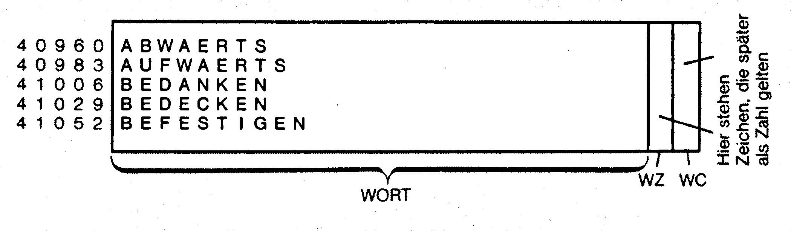
Satz 1 steht jetzt also ab Speicherzelle 40960, Satz 2 ab 40983 und so weiter. In Adresse 40960+21 steht die Wortzahl, in 40960+22 der Wortcode des 1. Wortes. Entsprechendes gilt für alle anderen Sätze. Sie sehen schon, daß es gar nicht so schwer ist, im RAM ein relative-Dateien-ähnliches Verwaltungssystem aufzubauen. Bevor wir uns jedoch näher mit der Verwaltung von RAM-Dateien beschäftigen, brauchen wir erst einmal ein Programm (Listing 9), mit dem es möglich ist, relative Dateien kurz und schmerzlos in RAM-Dateien umzuwandeln.
Der RAM-Editor ist ein reines Hilfsprogramm. Ich verzichte daher auf eine Dokumentation – es gibt auch kaum eine sinnvolle Idee, um die man den Editor noch erweitern könnte.
Lassen Sie uns nun unsere relative Wortschatzdatei in eine RAM-Datei umwandeln: Nach dem Programmstart fordert der RAM-Editor Sie auf, den Namen der Datei anzugeben, von der Daten ins RAM geschrieben werden sollen. Geben Sie hier »Wortschatz« an, legen Sie die Diskette, auf der sich die Wortschatz-Datei befindet, ins Laufwerk und drücken Sie RETURN. Sodann müssen Anfang und Ende des Bereiches angegeben werden, der ins RAM übertragen werden soll. Wir wollen die gesamte Wortschatzdatei umwandeln: also Anfang = 1 und Ende = 197 (da wir 197 Wörter im Wortschatz haben). Nun müssen Anfang und Ende des RAM-Bereiches angegeben werden, in dem die Daten später stehen sollen. Um das Programm allgemein zu halten, müssen Sie dies selbst ausrechnen. Wir wollen unseren Wortschatz ab Speicherstelle 40960 unterbringen. Warum der Editor nicht selbständig ermitteln kann, erkläre ich Ihnen gleich. Wir haben 197 Wörter und brauchen pro Wort 23 Byte RAM (wie wir bereits ermittelt haben). Es werden für den gesamten Wortschatz also 197 mal 23 = 4531 Byte benötigt. Das Ende des RAM-Bereiches errechnet sich also aus 40960 + 4531 = 45491. Jetzt wird der erste Satz der relativen Datei eingeblendet. Anhand der Cursortasten left-right und der Zifferntasten 1 bis 0 können Sie jetzt einzelne Satzteile markieren. In Bild 11 können Sie sehen, wie im Falle unserer Wortschatz-Datei markiert werden muß. Der Markierungsvorgang wird mit der RETURN-Taste abgeschlossen. Jetzt erscheint auf dem Bildschirm, wie der eben markierte Satz in einzelne Bereiche zerlegt wurde. Es können maximal 3 Bereiche markiert werden – in beliebiger Reihenfolge! Sie müssen nun zu jedem einzelnen Bereich angeben, ob er als VAL-Wert oder als String gespeichert werden soll. Bei String wird der Bereich einfach in ASC-Zahlen umgewandelt, die ins RAM gePOKEt werden. Bei VAL wird aus dem Bereich ein VAL-Wert ermittelt (der nicht größer als 255 sein darf – gegebenenfalls müssen Sie in High- und Low-Byte aufteilen), der dann einfach an die entsprechende Stelle im RAM gePOKEt wird. Sie müssen nun eine Zeitlang warten. Dann werden Sie aufgefordert, einen Filenamen anzugeben, unter dem die Wortschatz-RAM-Datei als PRG-File auf Diskette gespeichert wird. Bitte legen Sie hier eine leere Diskette ein und geben Sie als Filenamen »Wortschatz« an. Jetzt dauert's wieder eine Weile. Nun kann ein Index-File erstellt werden, was bei Wortschatz-Dateien in der Regel notwendig ist. Es müssen wieder Anfang und Ende des RAM-Bereiches angegeben werden und außerdem die Schrittweite – dies ist die Länge jedes Satzes im RAM – in unserem Fall 23 (Byte). Jetzt speichern Sie den erstellten Index unter dem Filenamen »Index« ab, und fertig ist die RAM-Wortschatzdatei. Dies alles hört sich viel komplizierter an, als es eigentlich ist. Bitte vergleichen Sie stets mit Bild 11, damit Sie beim Erstellen der RAM-Datei nichts falsch machen!
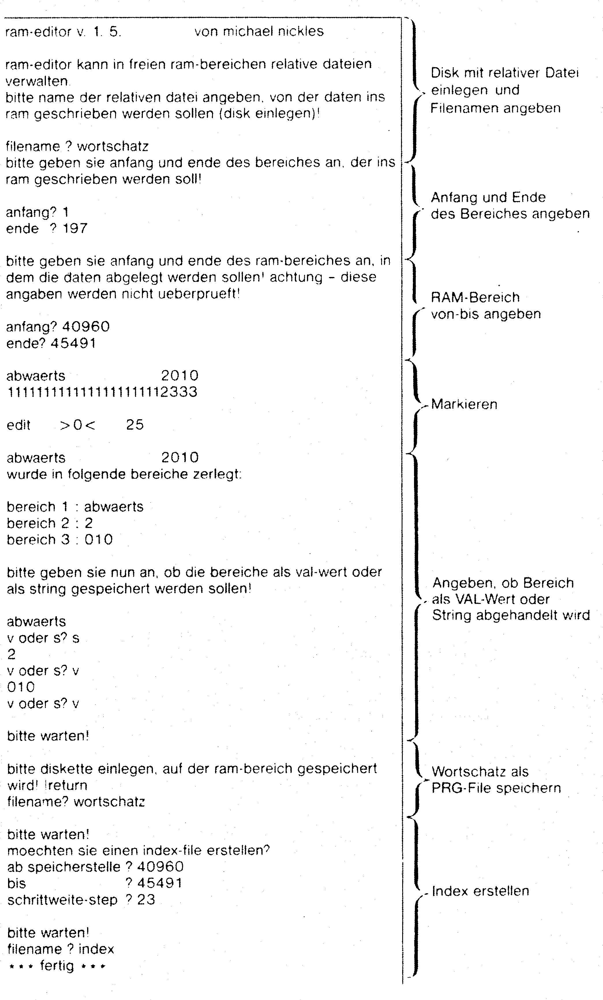
Die Wortschatz-Datei kann jetzt mittels LOAD»WORTSCHATZ«,8,1 geladen werden.
Der Index ist als SEQ-File gespeichert und kann folgendermaßen eingelesen werden:
5 OPEN3,4
10 OPEN1,8,2,"INDEX"
20 FORI=1TO26
30 :INPUT#1,X
40 :PRINT#3,CHR$(64+I)" AB ADRESSE"X
50 NEXTI
60 CLOSE1
70 CLOSE3Wenn Sie alles richtig gemacht haben, dann müssen Sie jetzt folgende Wertetabelle (bei Ausgabe auf Drucker) erhalten:
A AB ADRESSE 40960
B AB ADRESSE 41006
C AB ADRESSE 0
D AB ADRESSE 41581
E AB ADRESSE 41650
F AB ADRESSE 42018
G AB ADRESSE 42110
H AB ADRESSE 42317
I AB ADRESSE 42501
J AB ADRESSE 0
K AB ADRESSE 42547
L AB ADRESSE 42685
M AB ADRESSE 0
N AB ADRESSE 42823
O AB ADRESSE 43007
P AB ADRESSE 43076
Q AB ADRESSE 43237
R AB ADRESSE 43260
S AB ADRESSE 43605
T AB ADRESSE 44364
U AB ADRESSE 44502
V AB ADRESSE 44571
W AB ADRESSE 45031
X AB ADRESSE 0
Y AB ADRESSE 0
Z AB ADRESSE 45284
Jetzt steht der Programmierung von Parser 5.0, dem Superparser, nichts mehr im Wege. Im Prinzip ist es sogar ein leichtes, unseren Parser 4.0 so zu modifizieren, daß er statt mit einer relativen Datei mit einer RAM-Datei arbeitet. Dies ist jedoch nicht empfehlenswert, da es bei RAM-Dateien wesentlich effektivere Verwaltungsmöglichkeiten gibt, die allerdings etwas komplizierter als bei der relativen Disk-Verwaltung verlaufen.
Leider nicht komplett
Um Ihnen eine Enttäuschung zu bewahren, muß ich Sie bereits an dieser Stelle darauf aufmerksam machen, daß Sie auf diesen Seiten keineswegs einen kompletten Parser 5.0 finden. Es gibt einfach zu viele Möglichkeiten bei der Verwaltung von RAM-Wortschätzen, von denen Sie am besten selbst entscheiden, welche Ihnen am meisten behagt, nachdem ich Ihnen verschiedene vorgestellt habe.
Bitte geben Sie jedoch zunächst einmal Listing 10 ein.
Dieses Programm ist, wie bereits gesagt, noch kein kompletter Parser. Es soll Ihnen vielmehr als Grundgerüst eines Parsers 5.0 nach eigenen Vorstellungen dienen.
Dokumentation zum Listing:
| 10 | Laden des Wortschatzes von Diskette ins RAM. |
| 30 | Indextabelle IN (1)-IN(26) initialisieren |
| 40-80 | Index-DATAs. Hier wurde nichts weiter gemacht, als der Index-File ausgelesen und in DATAs untergebracht. |
| 100-160 | Hier steckt eine für Parser 5.0 grundlegende Erweiterung: Eine modifizierte PEEK-Funktion, die es erlaubt, die Speicherzellen unter dem Basic-ROM auszulesen. Sie wissen mit Sicherheit bereits, daß beim POKEn in diesen Bereich immer ins RAM, aber beim normalen PEEKen immer der Speicherinhalt vom ROM ausgegeben wird. Die erweiterte PEEK-Funktion wird mittels USR(X) aufgerufen. Wenn Sie zum Beispiel in Speicherzelle 60000 den Wert 1 schreiben mit POKE 60000,1, so erhalten Sie bei PRINT PEEK (60000) einen Wert, der nicht unbedingt der 1 entspricht. PRINT USR(60000) zeigt jedoch den Wert vom RAM: 1. Diese Erweiterung ist für alle diejenigen unentbehrlich, die Parser 5.0 ausschließlich in Basic programmieren wollen. |
| 200 | Aufruf von Parser 5.0 |
| 50010-50130 | Erweiterte INPUT-Routine. Diesmal mit schönem Eingabe-Ton. |
| 50200 | Das Herzstück von Parser 5.0 beginnt hier. |
| -50290 | Er erfolgt hier die Suche nach dem Wort. Das Programm ist sehr einfach gehalten. Es können nur Befehlssätze eingegeben beziehungsweise codiert werden, die nicht mehr als ein Wort enthalten. Sie können dies anhand des bisher erworbenen Wissens jedoch leicht ändern. |
| 50254 | Das Suchwort I$ soll im RAM gesucht werden. |
| 50255 | In der Variablen IM wird der ASC-Wert des ersten Buchstabens vom Suchwort gespeichert. Anhand der Index-Tabelle wird jetzt ermittelt, ab welcher Speicherzelle (=I) die Wörter stehen, deren erster Buchstabe den ASC-Wert IM hat. |
| 50262-50280 | Hier steht die eigentliche Suchroutine. |
| 50264 | Wenn IM nicht gleich USR(I) ist, so heißt dies, daß an der RAM-Stelle I ein Wort steht, dessen erster Buchstabe nicht mit dem Suchwort I$ übereinstimmt. Der Suchvorgang wird dann mittels GOTO 50290 abgebrochen, und es erfolgt die altbekannte Fehlermeldung »ICH KENNE DIESES WORT NICHT!«. |
| 50265 | Der gesamte Suchbegriff I$ wird vom ersten bis zum letzten Zeichen durchlaufen. Es wird dabei verglichen, ob ASC(MID$(I$,1,1)-ASC(MID$(I$,LEN(I$), 1) gleich USR(I-1) - USR(I-1+LEN(I$)) ist. Es werden also der Reihe nach die einzelnen Buchstaben des Suchwortes mit den entsprechenden Speicherzellen im RAM verglichen, von denen vermutet wird, daß sie dem Buchstaben entsprechen. |
| 50270 | Wird bei irgendeinem Buchstaben des Wortes eine Nichtübereinstimmung mit dem Wert im RAM festgestellt, so wird der Suchvorgang abgebrochen mit GOTO 50276, und der Zeiger I wird auf das nächste Wort im RAM gesetzt, dessen erster Buchstabe IM ist: I=I+23 (23, da jedes Wort beziehungsweise jeder Satz 23 Byte lang ist). |
| 50273-50275 | Wurde bis zum letzten Buchstabenvergleich keine Nichtübereinstimmung festgestellt, so wurde das Suchwort im RAM gefunden. Anhand der Wortart WA=USR(I+21) wird dann die entsprechende Wortzahl WA=USR(I+22) ermittelt. Das Wort ist somit codiert. |
Wenn Sie das Programm einmal laufen lassen, werden Sie überrascht sein, wie schnell die Wörter im RAM gefunden werden. Schon das Grundmodell von Parser 5.0 ist weitaus schneller als Parser 4.0 und Parser 4.1. Allerdings läßt sich die Verarbeitungsgeschwindigkeit noch erhöhen:
Man kann zum Beispiel eine index-binäre Suchroutine wie bei Parser 4.0 einbauen. Ergänzt man diese index-binäre Methode zu einer index-Feld-binären Suchroutine, so erhält man einen Basic-Parser, wie man ihn sich schneller kaum noch vorstellen kann.
Ein index-Feld-binärer Parser 5.0 kann an Geschwindigkeit nur noch mit Maschinensprache-Programmierung übertroffen werden. Allerdings kann man in puncto Wortschatz-Organisation noch einiges verbessern, wie die folgenden Beispiele zeigen:
Verbesserte Wortschatz-Organisation
Wie wir bereits festgestellt haben, besteht ein Wortschatz aus Verben, Objekten, Adjektiven und Richtungsangaben und AUS-Wörtern. Als Wortlänge haben wir uns bisher maximal 21 Zeichen reserviert. Sind aber wirklich 21 Zeichen nötig? – Mit Sicherheit nicht. Ein Verb zum Beispiel ist in 99% aller Fälle an 6 Buchstaben zu erkennen. Das heißt, kennt man die ersten 6 Buchstaben eines Verbs, so weiß man mit großer Wahrscheinlichkeit, welches Verb gemeint ist.
Betrachten wir doch einmal die ersten 6 Sätze unserer Wortschatz-Datei im Falle einer Verbkürzung auf 6 Zeichen:
abwaer 2010
aufwae 2009
bedank 1074
bedeck 1073
befest 1042
beklei 1065
belohn 1046
benutz 1063
beraub 1058
berueh 1017
Bei einer Umwandlung zur RAM-Datei benötigt man in diesem Fall nur noch 8 Byte – das heißt, man bringt fast dreimal soviele Verben unter wie bisher!
Es ist auch ein leichtes, eine neue Wortschatzdatei zu erstellen, bei der die Verben auf 6 Zeichen Länge begrenzt werden. Sie müssen beim Markieren mit dem RAM-Editor lediglich nur die ersten 6 Zeichen markieren. Bei der Suchroutine ist jetzt allerdings zu beachten, daß im Falle einer Verb-Suche nur noch die ersten 6 Buchstaben des Suchwortes im RAM gesucht werden. Und zwar linksbündig, wie es sich für die Verbsuche gehört. Analog für die Verben kann man auch die Adjektive und Richtungsangaben abhandeln. Bei den AUS-Wörtern, also den Wörtern, die eigentlich zur Codierung gar nicht benötigt werden (zum Beispiel der, die, das, den etc.), gilt dies im großen und ganzen auch.
Etwas schwieriger ist es mit den Objekten. Objekte können sehr lange Namen haben, wie zum Beispiel »Fernsehapparat« oder »Zeitmaschine«.
Behalten wir als Musterbeispiel einmal den Objektnamen »Zeitmaschine« bei. Objekte haben wir bei Parser 4.0 rechtsbündig gesucht (damit sowohl TÜR als auch HAUSTÜR verstanden wird etc.). Die letzten 6 Buchstaben von »Zeitmaschine« lauten »schine«, und daraus läßt sich wahrlich nicht erkennen, daß es sich um eine »Zeitmaschine« handelt. Würde man für die Objekte 10 Buchstaben reservieren, so käme man schon besser zurecht. Bei relativen Dateien muß jeder Satz die gleiche Länge haben, und es kann immer nur eine relative Datei gleichzeitig geöffnet sein. Deshalb waren wir bei Parser 4.0 und 4.1 auch gezwungen, eine große Wortlänge für die Verben zu reservieren, obwohl diese eigentlich nur für Objekte nötig ist. Eine Alternative wäre es gewesen, Objekte und die anderen Wortarten zusammen, in zwei getrennten relativen Dateien unterzubringen. Das Öffnen und Schließen von relativen Dateien wäre dann jedoch unvermeidbar gewesen. Das hätte Parser 4.0 stark verlangsamt, weil das Öffnen von relativen Dateien viel Zeit in Anspruch nimmt. Also eine miserable oder keine Alternative. Anders bei RAM-Dateien. Von ihnen können beliebig viele gleichzeitig geöffnet werden beziehungsweise sind immer offen. Es bietet sich also an, für die Objekte einen anders organisierten RAM-Bereich herzunehmen. Dies ist auch der Grund, warum ich unseren bisherigen Wortschatz frei von Objekten, nur aus Verben bestehend, gelassen habe. Ich bin mir ziemlich sicher, daß Sie bei Ihren eigenen Adventures zu den vorhandenen 197 Verben und Richtungsangaben kaum noch mehr als 50 andere finden. Wenn Sie sich also Platz für 400 Wörter mit 6 Zeichen Länge (250 Verben + 150 Adjektive) RAM reservieren wollen, so brauchen Sie 400 mal 8 = 3200 Byte Speicherplatz. Für Verben, Richtungsangaben und Adjektive und eventuell auch noch AUS-Wörter können wir das freie RAM von 53248 bis 57343 (= Platz für 511 Wörter mit 8 Zeichen Länge – mit 2 Zeichen gerechnet für Wortart und Wortcode). Jetzt haben wir noch freies RAM von 40960 bis 52222 – also genug Platz für 938 Objekte bei Objektlänge = 11 Zeichen + Wortcode (auf die Wortart können wir verzichten, da wir wissen, daß sich in diesem Bereich nur Objekte befinden).
938 + 511, das bringt einen Wortschatz von 1449 Wörtern. Was soll also das unsinnige Infocom-Getue um den fantastischen 1000er-Wortschatz. 1449 Wörter, das sind mehr Wörter, als der englische Grundwortschatz hat, mit dem sich immerhin schon 70 % aller Dinge in Englisch formulieren lassen, sind garantiert genug für jedes nur erdenkliche Adventure, das auf einem C 64 geschrieben werden soll. Jetzt liegt es nur noch an Ihnen, Parser 5.0 zu programmieren. Wenn Sie das gesamte Parser-Technik-Kapitel aufmerksam durchgearbeitet haben, dürfte Ihnen diese Programmierung keine Schwierigkeiten mehr bereiten (wobei Sie noch nicht einmal in Maschinensprache programmieren müssen)!
Bild 12 zeigt, wie es jetzt im RAM des C 64 aussieht:
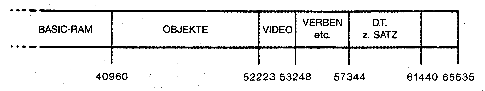
Der freie RAM-Bereich ist nahezu voll ausgenutzt mit dem Wortschatz und dem deutschen Zeichensatz. Besser kann man das RAM im Bereich der Adventureprogrammierung garantiert nicht mehr ausnutzen. Sogar die Grafikroutine (vergleiche Kapitel Grafikprogrammierung) läßt sich in dieses RAM-Schema noch integrieren – es geht dann nur Basic-RAM verloren sowie 1 KByte des Objekt-RAMs, wobei aber immer noch Platz für genügend Objekte vorhanden ist. Den RAM-Bereich von 61440 bis 65535 lasse ich Ihnen für eigene Ideen offen. Den Bereich von 1024 bis 2048, der durch das Verschieben des Bildschirms freigeworden ist, werde ich allerdings noch beanspruchen.
Wir haben es also geschafft – wir haben viele Basic-Routinen und Parser kennengelernt und das RAM des C 64 optimal mit Wortschatz, Grafikfenster und deutschem Zeichensatz belegt. Es steht also nur noch aus, das ganze Wissen zusammenzupacken und daraus Adventures zu programmieren. Wie das geht, erfahren Sie im anschließenden Kapitel.
(M. Nickles/bs)